榜样的力量-吴恩达采访人工智能大师实录吴恩达采访 Geoffery Hinton吴恩达采访 Ian Goodfellow吴恩达采访 Ruslan Salakhutdinov吴恩达采访 Yoshua Bengio吴恩达采访 林元庆吴恩达采访 Pieter Abbeel吴恩达采访 Andrej Karpathy
Geoffery Hinton主要观点：要阅读文献，但不要读太多，绝对不要停止编程。
Geoffrey Hinton：谢谢你的邀请
吴恩达：我想你是至今为止整个地球上发明最多深度学习核心理念的人，很多人都称呼你为“深度学习教父”，尽管我是直到和你聊了几分钟之后才发现我是第一个这样称呼你的人， 对此我深感荣幸不过我想问的是，许多人把你看作传奇，我更想知道一些传奇背后的私人故事，所以你是怎样在很久之前就投身于人工智能，机器学习以及神经网络之中的呢？
Geoffrey Hinton：当我还在高中时有一个什么都比我强的同学，他是个才华横溢的数学家，有天他来学校并且问我，你知道大脑是用全息图运作的吗？那时应该是1966年，我回答他 全息图是个啥？他就解释了一下，在全息图中，你可以切掉它的一半，但依然了解得到全貌，还有大脑中的记忆可能是分布于整个大脑中的，我大概猜到他可能是读过关于Karl Lashley的实验，其中讲到切掉老鼠几个小部分的脑子，然后发现很难找到哪一部分存储哪种特别的记忆，那是第一次让我对大脑，怎么储存记忆产生兴趣的时刻，然后当我去上大学的时候，我就开始学习生理学和物理学，当我在剑桥的时候我是唯一一个在学生理学和物理学的本科生，之后我放弃了这个选择并且尝试学哲学，因为我觉得那可能会给我更多的深入了解，但是后来我又觉得缺乏真正能够辨别错误说法的方法，然后我就转去学了心理学而在心理学中有着非常非常过于简单的理论，对我个人来说用来解释大脑的运作看起来无可救药的不充分，之后我花了点时间做一个木匠，然后我又决定想去试试看人工智能，于是就跑去爱丁堡跟Longuet Higgins学人工智能，他已经做了很棒的关于神经网络的研究并且刚刚决定放弃于此，转而对Terry Winograd的学说表示赞赏，我刚去的时候他觉得我做这个（神经网络）已经过时了，应该开始搞符号主义人工智能，关于这个我们有很多争论，但我还是坚持做自己相信的事情，然后呢？最终我拿到了人工智能博士学位。 但我在英国找不到工作，但我注意到了一个很不错的加州Sloan奖学金的广告，我拿到了这个奖学金，我去了加州，那里感觉很不一样。在英国“神经网络”看上去很愚蠢，而在加州 Don Norman和David Rumelhart对于神经网络的观念非常开放，在那里我第一次开始考虑大脑是怎么运作的，和心理学会有什么联系，看上去是一个积极的方向，这其中有很多乐趣，特别是和David Rumelhart一起工作相当棒。
吴恩达：我懂了，很好，1982年你在UCSD和Rumelhart在一起工作，最后写出了反向传播的论文，事实上，比这还要复杂点，什么情况呢？
Geoffrey Hinton：大概在1982年初David Rumelhart和我，还有Ron Williams我们开发了反向传播算法，这主要是David Rumelhart的想法，我们发现不少人都发明过David Parker发明过，可能比我们晚，但发表比我们早，Paul Werbos发表了好几年的，不过没人注意到还有其他人也做出了类似的算法，但不能清晰地表述出“反向传播”的含义，用链式法则求导并不是很新的想法。
吴恩达：明白，为什么你会认为你们的论文极大地帮助大家理解了“反向传播”呢？似乎你们的论文被认为是让大家去接受这个算法一个里程碑式的影响。
Geoffrey Hinton：最后我们的论文上了《自然》，为了论文被接受，我做了不少人事工作，我想到其中一个审稿人很可能会是Stuart Sutherland英国一位很有名的心理学家，我跑去和他聊了很久，跟他解释这到底是怎么一回事，给他留下了很深刻的印象，因为我们给他展示了反向传播法可以学习字元表示，你可以看到这些表示都是一些向量，你可以理解每一个特征的意义，实际上我们训练了三个名字的家族树模型，比如Mary的妈妈是Victoria，你给出前面两个名字，它能预测到最后的名字，训练过后你可以看到每一个名字的所有特征，比如某个人的国籍，是第几代，在家族树中的哪一旁枝等等，这震惊了Stuart Sutherland，我想，这是论文被通过的原因。
吴恩达：非常早期的放弃词向量，并且你已经在接触在训练算法中出现的能被学习的语义特征了。
Geoffrey Hinton：是的，所以从一个心理学家的角度来说，真正有趣的是它能把两股完全不同的知识概念统一起来曾有一些心理学家认为，知识概念是一大束特征，对此也有很多相关证据，之后又出现了现代AI的观点，也就是正式的结构主义观点，意思即是任何一个概念都有许多其他概念与其相关，为了理解一个概念，你会需要一个图形结构或是一个语义网络，然后这个后向传播的例子展示了你可以把信息传给它，信息会变成图形结构，在这个特殊情况是一个族谱，然后输入信息会用这样的方式变成特征，然后它能够使用这些特征来得到新的前后一致的信息，也就是归纳总结化。但是真正重要的是这样来回往复的图形或树形的表现族谱方式，把里面的人变成特征向量这种形式，事实上从图形状的表现手法，你也能够得到特征向量，从特征向量你又可以得到更多的图形陈述，那时候是1986年。90年代早期 Bengio就已经展示过，你可以把真实的数据，比如你可以拿来英文文本，然后使用这些技巧得到文本的词语向量，这曾经惊艳了许多人。
吴恩达：最近我们在聊的都是计算机变得有多快，比如使深度学习不断提高的新的GPU和超级计算机，我在90年代到1986年那时还不存在的这些工具，听起来你和Bengio那时就已经开始引发了这个潮流。
Geoffrey Hinton：是的，在当时的确是很大的进步。在1986年，我曾经用一个速度小于十分之一秒百万次浮点运算的列表机，大概1993年左右，人们才逐渐开始见到十秒百万次浮点运算，所以曾经都是100的倍数，在那时也许还挺好用的。因为计算机才刚刚开始变快。
吴恩达：原来如此，前几十年的时候，你就已经发明了这么多神经网络和深度学习相关的概念，我其实很好奇，在这么多你发明的东西中，哪些是你到现在为止依然还是保持热情的。
Geoffrey Hinton：我认为最具学术之美的是我和Terry Sejnowski做的Boltzmann机器，我们发现它能用非常非常简单的学习算法去应用到密度很高的连接起来的网络，这些网络中只有一些节点能被看到，那么隐藏表示方式，能够用非常简单的算法学习，看起来也是一种你应该能够应用大脑的东西，因为只需要知道直接和每一个突触相连接的两个神经元所被传播的信息应该都是一样的，这里有两个不同的时期，我们也可以称为唤醒和睡眠，但是在这两个不同时期传播信息的方法都是一样的，不像在后向传播中有前后向两种，方法不同，因为发送不同种类的信号，这就是我觉得它的魅力所在，很多年以来都看似只是好奇心所向，因为运行速度很慢，不过后来，我去繁为简，开始只在简单些的网络用一个循环，于是就有了受限Boltzmann机，实际中反而更有效，在Netflix的比赛中，举个例子，受限Boltzmann机是第一名所用的算法之一。
吴恩达：事实上，很多最近复苏的神经网络，深度学习，从2007年开始，受限Boltzmann机和解除限制Boltzmann机，你和你实验室做了很多贡献。
Geoffrey Hinton：这是另外让我做得很开心的工作，你能训练受限Boltamann机的想法，仅用一层的隐藏特征，只学一层特征，然后你可以重复把特征当成数据，然后再把新的特征当成数据，再重复，直到你想要的次数，实际能够应用，的确很不错，然后Uy Tay（音）发现这全部过程，可以想成是一个模型，虽然有点奇怪，这个模型顶部是一个受限Boltzmann机，往下是个s形置信网，这发明很超前，这是个针对模型，并且我们想要，能训练这些受限Boltzmann机，能有效地适用于s形置信网，那时，已经有人在做神经网络了，在用高密度连接的网络，但是没有足够好的概率标记，也有人在做图模型，不像我的孩子们能做合适推理，但是也只能用在稀疏连接的网络，我们展示了训练深层置信网络的方法，使大致上的推理变得非常快，只需要一个前向推进，结果就能很美丽，你可以保证，每次学一层新的特征，都有新的带，每次都是这样，每个新的带都会比旧的好。
吴恩达：变分带显示你是否新加了层数，对，我记得那个视频。
Geoffrey Hinton：这也是第二件我始终很感兴趣的东西，第三个是做过的一些变分法，统计学者们也做过类似的东西，不过那时我们并不知道，我们让EN变得更有效，通过证明你不需完美的E步骤，而只需要个大约的，EN当时在统计学很有分量，我们证明了它能被一统化，特别是 1993年 和Van Camp，我写了篇论文，是第一篇变分贝叶斯的论文，并且证明了可以只用一个版本的贝叶斯学习，更容易处理，因为能用a来估算真正的后验概率，也可以用在神经网络中，我对此非常兴奋。
吴恩达：原来如此，哇，真牛。对，我记得提到的所有论文，你和Hinton（口误）在论文上花了很多时间，我认为一些现在用的算法或大多数人几乎每天用的一些算法，比如dropout 或来源于你团队的激活函数。
Geoffrey Hinton：对但不完全是，那么其他人可能也做过ReLU，我们在受限Boltzmann机上花功夫证明了ReLU几乎完全等同于一叠logistic单元，这是其中之一推进ReLU前进的力量。
吴恩达：我对此非常好奇，这论文的价值是，用了大量数学证明此函数能被复杂公式估算，你是为了发表论文做的数学，还是真的为了影响0和x的最大值的发展。
Geoffrey Hinton：并不是为了发论文的情况，数学对推进这个想法，真的很有影响力，我显然已经知道ReLU还有logistic单元，由于我花了心血在Boltzmann机上，全都是用的logistic单元，那时候面临的问题是，这个学习算法可能用在ReLU吗，证明完ReLU几乎等同一叠logistic单元后，我们展示了所有的数学证明。
吴恩达：原来如此，它为无数现在使用ReLU的人们提供了灵感，也不需要特别懂得每个细节。
Geoffrey Hinton：对，那么其中之一的发现在我到Google之后，是2014年我在Google讲ReLU的用法以及怎么用单位矩阵初始化，因为ReLU的一大优点是，如果不断复制隐藏层，又用单位矩阵初始化，它会复制下层的模式，我展示了你可以训练一个300个隐层的网络，并且用单位矩阵初始化，会很有效率，但是我没有继续研究下去，也很是后悔，我们只发了一篇论文，能证明你可以初始化，可以初始化重复发生，我应该继续研究的，后来就剩下来了。
吴恩达：很多年以来我都听到你谈论大脑，我听到过你谈论后向传播和大脑的关系，现在你对此是什么想法。
Geoffrey Hinton：我现在正好有论文在准备中，主要想法就是这个，如果后向传播是个好的学习算法，那进化过程肯定会从中干扰，有些细胞会变成眼球或是牙齿，如果细胞能做这些，就一定能应用后向传播了，这样假设会造成极大的选择性压力，所以我觉得，毫不怀疑这种想法的神经科学家有点犯傻，可能有比较微妙的应用，我想大脑可能，不会完全用后向传播，但是足够相似，这么多年以来我想出很多可能的理论，在1987年我和Jay McClelland做出了循环算法，核心想法是你发送信息并循环，并在循环之中保持，它所包括的信息，最简单的版本是，你有输入和隐藏单元，然后你从输入发信息到隐藏单元，再回到输入，再到隐藏，再回到输入，以此类推，那么你想要 训练一个自动译码器，但是你想绕开后向传播，你只要训练，并且去掉所产生的变化，核心想法是神经元突触的学习方式，通过改变突破前的输入权重比重，同时按比例改变突破后的输入，在再流通时，你需要突破后的输入，旧的比较好，新的较差，这是比较理想的情况，我们在神经科学家发明尖峰时序依赖可塑性之前，发明了这个算法，尖峰时序依赖可塑性，是个相同的算法，但是，相反，需要新的东西较好，旧的较差，所以，用预先设定前景活动的权重比例，乘以新的，再减去旧的，后来我在2007年发掘，如果你用一叠，受限Boltzmann机来训练，训练完，你会有完全正确的条件，来重建并实现后向传播，如果你关注重建时期，重建时期实际会告诉你偏差表现的导数，2007年的第一个深度学习专题讨论中，我曾做过相关演讲，那时几乎被完全遗漏的部分，后来 Joshua Bengio重拾这个想法，下了很多功夫，我自己本人也做了很多相关研究，如果你有一叠自动译码器，就可以通过后向传送活动和重建点定位，得到导数，这个有趣的想法也是大脑工作的原理之一。
吴恩达：另一个据我所知，你正在研究的，怎么在深度学习中解决多个时间技巧，能分享一些你的想法吗？
Geoffrey Hinton：没问题，这要回溯到我研究生第一年，我第一次展示了怎么用快速权重，也就是适应很快，衰退也很快的权重，所以只有短期记忆，我在1973年展示了一个很简单的系统，可以用这些权重做真实循环，真实循环的意思是，用到的神经元来表示循环核心的东西用到的权重，实际也是在循环核心被重复利用的知识引导出的新问题是，当你突出循环核心时，怎么记得已经是在过程中了，这个记忆从何而来，因为你用过了重复核心的神经元，答案是你可以把记忆放入快速权重中，这些活动神经元可以从快速权重中复原和Jimmy Ba最近的研究中，我们已经有了篇关于，这样来用快速权重复原的论文，这个空缺非常大，1973年的第一个模型没有被发表，接下来就是2015或2016年Jimmy Ba的模型，前后相隔40年。
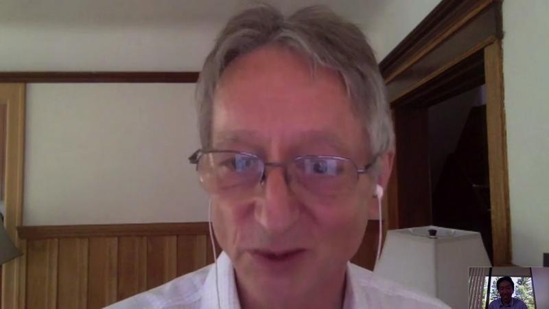
吴恩达：是个有些年头的概念，五年左右，叫做胶囊，你目前进展如何？
Geoffrey Hinton：我回到之前所在的状态，就是我非常笃定地相信，所有人都不信的东西，我提交了一些论文都会被拒接但是我真的相信这个想法，我也会继续研究，在转移中有一些很重要的概念，其一是如何表示多维个体，你可以用些借壳活动，表示多维个体，只要你知道其中的任何一个，在图片中任何一个区域，你会假设至少有一个特别的特征，之后你会用一堆神经元，以及它们的活动来表示特征的不同方面，比如坐标具体在哪，在哪个方向，移动速度是多快，是什么颜色，什么亮度，类似等等，你可以用一堆神经元，来代表不同维度的同一个东西，假如只有其中一个，这种做法很不一样，相比于普通方式，普通来说在神经网络中就只有一个很宏观的层，所有的单元和作用都在里面，但是你不会想到把它们结合成一个个小组，来用不同的坐标表示相同的东西，我们应该去掉多余的结构，另一个想法是。
吴恩达：在真实的表示方法中，再分段表示，对不同的子集，去表示。
Geoffrey Hinton：我把这些子集叫做胶囊，胶囊是能够表示一个特征的，一个并只有一个的情况，它能表示特征的所有不同性质，胶囊比一般的神经元能表示更多性质，或是一个普通的神经网络，因为只能表示一个度量上的属性。
吴恩达：原来是这样。
Geoffrey Hinton：当你能这么做之后，你还能做到普通神经网络表现很差的是，我称为常规协议，假设你想要分层，然后图片中有一张嘴，一个鼻子或是别的东西，你想知道你该不该尝试组合成一个东西，这个想法就可以用胶囊。比如一张嘴，有关于嘴的参数，还有鼻子的胶囊。也有关于鼻子的参数，再确定该不该把它们拼起来，你会有来决定能不能拼成脸的参数，要是嘴鼻子有对的空间关系，它们就会对应上，在统一层面有两个相应的胶囊，能组成到下一个层面，就可以决定应该组合起来，因为在高维度能对应上很难得，这过滤方法很不同寻常，相比普通情况的神经网络，常规协议会变得至关重要，特别是用有限数据总结概括时，这个观念上的改变会帮助完成分段，我希望统计角度也更有效，对比我们现在的神经网络，如果你想要改变观点，你就得尝试做，并且全都训练一遍。
吴恩达：好的，相比FIFO学习，监督学习，还可以做点不一样的。
Geoffrey Hinton：我还是计划做监督学习，但是前向路线会很不一样，不同之处在于里面还有些循环过程，比如你觉得找到个嘴，找到个鼻子，之后用几个循环去决定，它们能不能组成一张脸，用这个循环可以做后向传播，也可以有偏重地试试看，我在多伦多的小组正在研究这个，在多伦多我有一个Google小组，是Brain组的一部分，现在我对此非常兴奋。
吴恩达：的确很棒，很期待论文的发表。
Geoffrey Hinton：哈哈对，假设能发表的话。
吴恩达：你研究深度学习都几十年了，我很好奇你的想法，关于AI有什么改变吗？
Geoffrey Hinton：我用了很多时间，在后向传播上，比如怎么使用，怎么实现它的力量，刚开始，80年代中时，我们在做偏重学习，结果很不错，然后到90年代早期，大多数人类学习都，应该是无监督学习，然后我对无监督学习产生浓厚兴趣，开始研究Wegstein算法。
吴恩达：那时候你的探讨对我个人影响也很大，我在领导Google Brain团队时，第一个项目就在你的影响下研究了好多无监督学习。
Geoffrey Hinton：是呢，我可能误导你啦，因为长期来说，无监督学习绝对会变得很重要，但是面对现实，近十年以来所做的都是监督学习，侧重学习都有标签，你想预测一个系列的下一个东西，也就是标签，结果惊人的好，我仍相信无监督学习会很重要，当我们真正搞明白一些东西以后，结果会比现在好得多，不过目前还没到。
吴恩达：嗯，深度学习里的高级研究人员，包括我自己对此依然很是激动，因为我们中没有一个人知道该怎么办，可能你知道，但是我不行了。
Geoffrey Hinton：变分法改变代码是你会用到更新参数化的地方，这想法看起来很不错，生成对抗网络也是很棒的想法，生成对抗网络我认为是深度学习中最新最重要的想法，我希望胶囊也能这么成功，生成对抗网络目前是很大的突破。
吴恩达：稀疏，缓慢的特征上有发生什么吗？其他两个无监督建模的原则是什么。
Geoffrey Hinton：我从未像你一样看重稀疏性，但是慢速特征，我认为，是个错误，不应该说慢，基本想法是对的，但不应该只考虑不变的特征，而是可预测改变的特征，建任何模型的基本原则大概是，先记录测量，对其应用非线性变换，直到状态向量成为表达式，这项活动变得线性时，不能像做普通渗透一样，假设线性应该找一个从观察转换，到潜在变量的转换，线性操作，比如潜在变量的矩阵乘积。即是如此，举个例子：如果你想改变观点，如果你想从另一个观点产生图像，需要从像素转化到坐标，当你有坐标表示后，希望胶囊也能做到如此，你就可以做矩阵乘数来改变观点，再投射到像素中。
吴恩达：这就是为什么这是个非常宏观的原则，也是你做面部人工合成的原因，对吗，即是把脸压缩成低维度向量，再生成其他的脸。
Geoffrey Hinton：我曾有个学生研究这个，我自己本人没怎么做。
吴恩达：你应该常常被问到，如果有人想要入门深度学习，该做什么，你有什么建议吗？之前应该有很多一对一的情况，但对于全球范围都在看这个视频的观众，对于要学深度学习的人们，你有什么样的建议。
Geoffrey Hinton：好，我的建议是多读论文，但别读太多，我从导师那里得到这个建议，很不想大多数人说的，大多数会告诉你尽量多读，然后开始自己的研究，对一些研究人员应该是正确的，但是对有创意的人应该读一少部分，然后发现一点你认为所有人都错了的东西，在这点我一般都逆着来，你看到它，感觉不太对，然后想怎么才能做对，当人们反对你时，要坚持自我，我支持人们坚持自我的原则，是判断直觉的对错，你直觉还不错的话，就该坚持，最后一定会成功，要是你直觉一般的话，做啥都无所谓。
吴恩达：我懂了哈哈，鼓舞人心的建议 就坚持下去。
Geoffrey Hinton：该相信直觉，不相信就没意义了
吴恩达：我懂了，是的。我通常建议人们不要只看，而是要重现发表了的论文，自然而然限制了你做的数量，因为重现结果很耗时间。
Geoffrey Hinton：对，当你重现发表的论文时，会发现所有使之成功的小技巧；另一个建议是，永远不要停止编程，因为如果你给学生布置任务，他们三天打鱼两天晒网，回头就会告诉你看，没做成，没做成的原因，往往是他们所做的小决定，当时不觉得很重要，举个例子，如果你给一个好学生任务，你可以给他们任何人任务，他都会做成，我记得曾经有一次，我说。诶等等，我们上次讨论时，因为某某原因，是不可能成功呀，学生回答说：“对呀，你说完我就发现了，就假设不是你真的意思”。
吴恩达：哈哈原来这样，那很厉害，还有其他关于AI和深度学习的建议吗？
Geoffrey Hinton：我认为基本上，开始锻炼直觉时要读够，然后相信直觉，自己动手，不要担心别人有反对意见。
吴恩达：你也没法证明，他们说的对不对，除非亲自做了，才能知道
Geoffrey Hinton：对，但还有一点，如果你有个绝好的想法，别人都觉得完全荒谬，那你就找对东西了，举个例子，当我刚想出来变分法时，我给之前一个叫Peter Brown的学生写了封信，他懂得很多EN相关知识，他就拿去给一起工作的人看，名字叫俩兄弟，可能是双胞胎吧，然后他说，俩兄弟说了，你要么是你喝多了，要么是傻，俩兄弟当真认为是荒谬之论，部分原因可能是我用的解释方式，因为我只解释了直觉，但当你有个很不错的想法时，其他人觉得完全是垃圾，就是个好想法的信号了。
吴恩达：好的，研究课题的话，新研究生们应该多研究胶囊，无监督学习，还有其他吗？
Geoffrey Hinton：对新研究生的一个好建议是，找一个和你意见一致的导师，因为如果你做的东西，导师也深深赞同，你会得到很好的建议，要是做你导师不感兴趣的东西，你会得到没啥用的建议。
吴恩达：好的，最后对于学习者的建议，有什么建议给想攻读博士的人，或去顶级公司工作，或顶级研究团队。
Geoffrey Hinton：这问题复杂。我认为现在，没有足够的深度学习学者在大学中教育有求知欲的人，就没有足够的教职人员，不过应该是暂时性的，发生的事是这样，大多数部门很少有，真正懂得这场革命的人，我几乎同意，这并不是二次工业革命，但是规模接近，有如此巨大的改变，基本是因为我们和计算机的关系改变，不再只是编程序，而是让它们有能力自动解决问题，从根本上改变了计算机的用法，计算机科学部门，却是在之前基础上建立起来的，他们暂且不懂，训练计算机会和编程一样重要，部门中一半的人，得实际去试过训练计算机，我所在的部门就拒绝承认，应该放手让很多人去做，他们觉得有几个就够，可不能放太多人去，这种情况下，你就得建议大公司多花点时间训练员工，Google培养的人们，我们叫做brain居民，我很怀疑最后大学们能赶上。
吴恩达：嗯，没错，实际上，能有很多学生都发现了，前50的学校超过一半的申请者实际，只想训练计算机而不是真正做编程，是，归因齐宗，深度学习AI的微专业课程，据我所知，最初都是，你在Coursera上教授的，还得回溯到2012年，奇怪的是，也是你发表RMS算法的时候，也还挺难的。
Geoffrey Hinton：你邀请我去做，大型开放网课，我可是很怀疑的，但你一直逼我，我很庆幸我那么做了，尽管工作量极大。
吴恩达：是的，感谢你做到了，我还记得你发牢骚，说要做的这么多，你还老是熬夜，但我觉得很多很多的学者都受益于你的课程，我也非常感激你真的做到了。
Geoffrey Hinton：很棒，对。
吴恩达：这些年来，我也目睹你被卷入AI界模范的辩论中，以及是否有过AI的变更，你可以分享一下你的想法吗？
Geoffrey Hinton：我很乐意，早期时，大概50年代，像Von Neumann之类的人，都不相信符号化AI，他们灵感更多来源于大脑，不幸的是，他们都英年早逝，未能使自己的想法面世，AI早期时，人们完全被说服，智力的表示该是，某种符号表达，比较整洁的逻辑，而不完全是逻辑，但是类似逻辑，智力的本质是推理，现在发生的是，有种完全不同的观点，就是无论想法是什么，都是一个很大的神经活动向量，对比符号化的表示，我认为那些把想法想成是符号表达的人，大错特错，输入是一串字符，输出是一串单词，因此，单词的字符串显然能作为表达式，他们觉得一定是字符串，或其他类似字符串的东西，我却不认为是这样，我觉得想法该是某种语言，简直和，把想法置于空间层面理解，必须得是像素进，像素出，一样傻，要是我们能与点矩阵打印机相连，那像素就会出来，但中间的并不是像素，所以我认为想法该是一个大向量，有因果能力的大向量，能引发出其他大向量，这于AI的标准观点，符号化表达完全不同。
吴恩达：好的，AI是肯定会改变，到新的视角的。
Geoffrey Hinton：起码一部分，大多数人还是认为，AI是符号式的
吴恩达：非常感谢你愿意接受采访，能听到深度学习进化的全过程很棒，还有你依旧在带领它前进，很感谢你Geoff。
Geoffrey Hinton：感谢你给我这个机会，谢谢你。
吴恩达：嗨，Ian，感谢你今天接受采访。
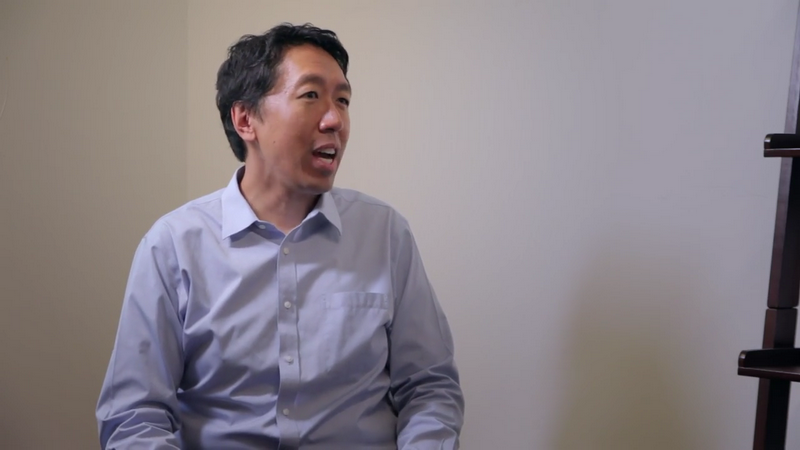
Ian：谢谢你邀请我，Andrew，我很高兴来到这里。
吴恩达：今天你也许是世界上最知名的深度学习研究员之一，让我们来听听你的心路历程吧，你是怎样一步步进入这行的呢?
Ian：好，是个好想法，我想我是在遇到你之后才开始对机器学习感兴趣的，我一直从事神经科学研究，我的本科时代导师斯坦福大学的Jerry Cain鼓励我去上你的AI课。
吴恩达：啊，这我不知道呢。
Ian：好，所以我一直觉得AI是个好想法，但在实践中，主要的，我想主要达到实用的是一些比如游戏AI，有很多人工编码的规则，让游戏中的非玩家角色，在不同的时间点说出不同的脚本对话，然后，当我在上你的AI入门课程时，你讲到的话题，线性回归和线性回归，误差的偏差和方差分解，我开始意识到这可以是真正的科学，我实际上可以，在AI领域从事科学研究而不是神经科学。
吴恩达：我知道了，很好，那接下来呢?
Ian：然后我就回来当你的课程助教了呀。
吴恩达：原来如此，当我的助教。
Ian：其实我人生的一大转折点，就是在当那门课助教的时候，其中一名学生，我的朋友Ethan Dreifuss对Geoff Hinton的深度信念网络论文很感兴趣。
吴恩达：我知道了...
Ian：是我们两个最后一起在斯坦福大学搭建了世界第一台GPU CUDA机器,专门用来跑玻尔兹曼机,就在那年寒假的业余时间里,我知道了,在那时候,我开始有一个非常强烈的直觉,深度学习才是未来,那时我们接触了很多其他算法,比如支持向量机,它们的渐近线不太靠谱,当你输入更多训练数据时,它们却在变慢,或者对于相同数量的训练数据,改变其他设定并没有改善它们的表现,从那开始,我就专注于深度学习了。
吴恩达：我记得Richard Reyna有一篇很老的GPU文章,提到你做了很多早期的工作。
Ian：是的，是的，那篇文章用的就是我们搭建的一些机器，是的，我建造的第一台机器就是Ethan和我建立的机器，用我们自己的钱在Ethan妈妈的房子里搭的，之后，我们用实验室经费在斯坦福实验室搭了两三台。
吴恩达：哇，太神奇了，我还不知道这事，太好了。那么，今天真正以风暴席卷深度学习世界的，是你发明的生成式对抗网络(GAN)，那么你怎么想出来的呢?我一直在研究生成模型很久，所以GAN是其中一种生成模型，你有很多训练数据，你希望学会制造更多类似它们的数据，但它们都是虚构的，网络还没见过这种形式的虚构数据，还有几种办法可以做生成模型，在我们想出GAN之前还流行了几年，在我读博的时候，我一直在研究其他各种方法，我非常了解所有其他框架的优缺点，玻尔兹曼机器和稀疏编码，还有其他多年来一直很受欢迎的方法，我那时正在寻找某个可以同时避免所有方法缺点的东西，最后，当我在一个酒吧里和朋友争论生成模型的时候，灵感来了，我开始告诉他们，你需要这么做，这么，这么做我保证管用，我的朋友不相信会管用，我本来还在写一本深度学习的教科书。
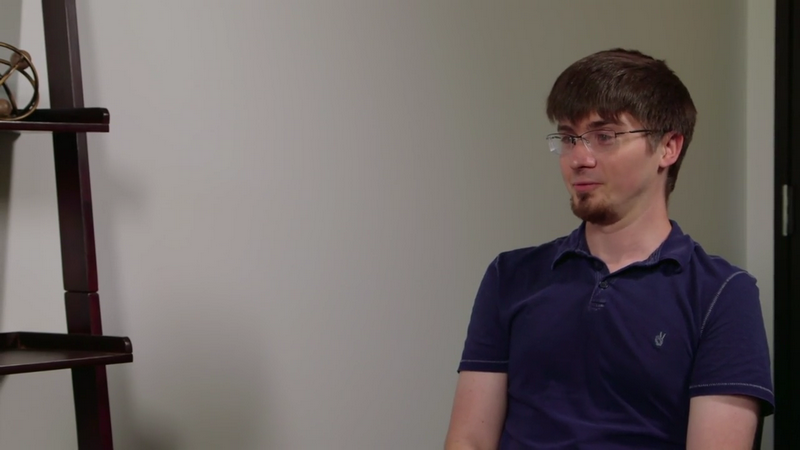
吴恩达：我知道了..
Ian：但是我强烈相信，这个想法是靠谱的，我马上回家，当天晚上就调试成功了。
吴恩达：所以只花了一晚上就调试成功第一个GAN了?
Ian：我大概在午夜做完的，就从我朋友在酒吧的离职派对离开回到家之后。
吴恩达：我知道了..
Ian：而它的第一个版本是有效的，这是非常非常幸运的，我没有搜索超参数或任何东西。
吴恩达：我在某个地方读过一个故事，在那里你有一次涉死体验，让你对AI的信仰更坚定了，给我讲讲那个故事。
Ian：我其实没有涉死啦，但有那么一瞬间我觉得要死了，我头很痛很痛，一些医生认为我可能有脑出血，在我等待我的MRI结果，看看有没有脑出血时，我意识到，我的大部分想法都是，要确定有其他人继续尝试我当时的研究思路。
吴恩达：我懂了，我懂了。
Ian：回想起来，那些都是非常愚蠢的研究思路。
吴恩达：我懂了..
Ian：但在这一点上，我意识到这实际上是我生活中优先级最高的事，就是做机器学习研究工作。
吴恩达：我懂了，是啊，那很棒，当你以为你快要死的时候，你还是想如何完成研究。
Ian：是的。
吴恩达：是，这真的是信仰。
Ian：是的。
吴恩达：是啊，是啊，所以今天你仍然处于GAN研究的风暴中心，就是这个生成性对抗网络，可以告诉我怎么看GAN的未来吗？
Ian：现在GANs应用在很多场合里，比如半监督学习，生成其他模型的训练数据，甚至模拟科学实验，原则上这些东西都可以用其他生成模型来做，所以我认为GAN现在在一个重要的十字路口，现在它们有时候效果很好，但要把它们的潜力真正发挥出来，更像是艺术而不是科学，10年前人们对深度学习的感觉或多或少也是如此，当时我们正在使用，以波尔兹曼机器为基础的深层信念网络。它们他们非常非常挑剔。随着时间的推移，我们切换到修正线性单元和批量归一化，深入学习变得更加可靠，如果我们可以把GAN变得像深度学习一样可靠，那么我想我们会继续看到GAN，在今天它们的应用领域里获得更大的成功，如果我们弄不清楚如何稳定GAN，那么我想它对深度学习历史的贡献，就是它向人们展示了如何完成这些涉及到生成模型的全部任务，最终，我们将用其他形式的生成模型来代替它们，所以我花了大约40%的时间试图稳定GAN。
吴恩达：我懂了，很酷，我想就像很多人大约10年前进入深度学校领域一样，比如你自己，最后变成了领域的先驱者，也许今天加入GAN的人，如果它确实管用，那么最后可能也会成为先驱。
Ian：是啊，很多人已经是GAN的早期先驱，如果你想描述GAN的历史，你真的需要提到 比如Indico等其他组织，还有Facebook和伯克利，那些小组完成的各种工作。
吴恩达：所以除了你的研究，你还合著了一本关于深度学习的书，可以说说吗?
Ian：没错，我和Yoshua Bengio和Aaron Courville合著的，他们是我的博士导师，我们写了一本现代版深度学习教科书，一直很受欢迎，英文版和中文版都很受欢迎，我们已经售出了我想两种语言加起来有70000本吧，而且我从学生那里得到了很多反馈他们说获益良多，我们有件事做得和其他教材不同，我们一开始就介绍深度学习需要用到的数学知识，我从斯坦福大学课程中得到的一件事是，线性代数和概率论非常重要，人们对机器学习算法感到兴奋，但如果你想成为一名非常优秀的从业者，你必须掌握基本数学，这是整个算法的基础，所以我们确保一开始，集中讨论需要的数学基础，这样，你就不需要重头开始学习线性代数，你可以得到一个短期训练课程，了解对深度学习最有用的线性代数。
吴恩达：所以即使有些学生数学基础不好或者有几年没接触过数学，你就可以从教材的开始，学到进入深度学习的所有背景知识。
Ian：你需要知道的所有事实都在那里，当然，你肯定需要集中精神去掌握其中一些概念。
吴恩达：是的，是的，很好。
Ian：如果有人真的害怕数学，这经历可能还会有点痛苦，但如果你准备好去学习的话，我相信你一定可以掌握的，你们需要的所有工具都在哪了。
吴恩达：作为在深度学习领域工作了很长时间的研究员，我很好奇，果你回头看看这几年，可以告诉我你的一些想法吗？AI和深度学习在这些年是如何逐渐演变的。
Ian：十年前，我觉得，作为一个社区，机器学习中最大的挑战就是这样，如何让它可以处理AI相关的任务，对于更简单的任务，我们那时有很好的工具，比如我们想要提取特征，识别规律，人类设计师可以做很多事情，他们设计出这些功能，然后交给计算机去做，这种做法对很多任务效果都很好，比如预测用户会不会点开广告，或者不同的基本科学分析，但当我们要处理几百万像素的图片时，就很困难了，或者处理音频波形，其中系统必须从零开始学到所有知识，五年前我们开始跨越了这个障碍，现在我们来到了一个时代。如果你想从事AI事业，有太多不同的道路可以走，也许他们面临的最难的问题是应该选择哪条路走下去，你希望让加强学习效果和监督学习一样好吗?你希望让无监督学习效果和监督学习一样好吗?你希望机器学习算法是不偏不倚，不会带上我们的偏见，尽量避免这些偏见，如果你想确保和AI有关的社会问题得到妥善解决，确保AI可以让所有人获益，而不是造成社会动荡和大规模失业?我想现在，真的可以做到很多不同的东西，可以避开AI的所有缺点，同时利用它能提供的所有优点。
吴恩达：今天有很多人想进入AI领域，你对这些人有什么建议?
Ian：我想很多想进入AI领域的人，一开始想，他们绝对需要获得博士学位或者这样那样的证书，我觉得实际上这已经不是必要条件了，其中一种获得注意的方式是，在GitHub上写很好的代码，如果你有一个很好玩的项目，解决了某人在前沿希望解决的问题，一旦他们找到了你的GitHub代码，他们会直接找到你，让你到他们那工作，我雇的很多人，去年在OpenAI或今年在谷歌招聘的人，我一开始想很他们合作因为，我见到他们在互联网开源论坛上发表的一些代码段，写文章并发表到arXiv上也是可以的，很多时候要将一个东西打磨完美成为对科学文献的新贡献是很难的，但在这之前你可能已经能开发出一个有用的软件产品了。
吴恩达：所以读读你的教材，在各种材料上练习然后把代码发布到GitHub 或者arXiv上。
Ian：如果你要用那本教材学习，那么同时开始做一个项目是很重要的，总之要选择某种方式，将机器学习应用到你兴趣的领域，比如，如果你是一名田野生物学家，你想利用深度学习，也许你可以用它来识别鸟类，或者如果你不知道想用机器学习做什么，你可以去做，比如街景门牌号码分类器，这里所有数据集都设立好了，你直接可以用，这样你就可以练习一下，教材介绍到的所有基本技能，或者当你看给你解释概念的Coursera视频时，直接去练习。
吴恩达：所以在过去的几年里，我看到你做的一些对抗性样本的工作，告诉我们一下。
Ian：是，我想对抗性样本就是我称为机器学习安全的新领域，过去，我们看到计算机安全问题，攻击者可能会骗计算机跑错误的代码，这就是所谓的应用级安全性，以前有些攻击方式是人类可以骗过一台计算机，让它相信网络上的消息来自某个可信任的人，但其实不是真的，这就是所谓的网络级安全性，现在我们开始看到，你也可以骗到机器学习算法，让它们去做不应该做的事情，即使运行机器学习算法的程序运行的代码完全正确，即使运行机器学习算法的程序知道网络上所有消息的来源，也能骗到，我认为在新技术开发初期，考虑加入安全性非常重要，我们发现把一个系统建立起来以后，再引入安全性是很难的，所以我对现在要研究的想法非常激动，如果我们现在开始预见机器学习的安全问题，就可以从一开始确保这些算法的安全性，而不是过几年再回头打补丁。
吴恩达：谢谢，那太棒了，你的故事有很多神奇的地方，尽管已经认识你很多年了，我实际上并不知道，所以感谢你分享这一切。
Ian：你太客气了，谢谢你邀请我，这是很好的机会。
吴恩达：好的，谢谢。
Ian：非常感谢！
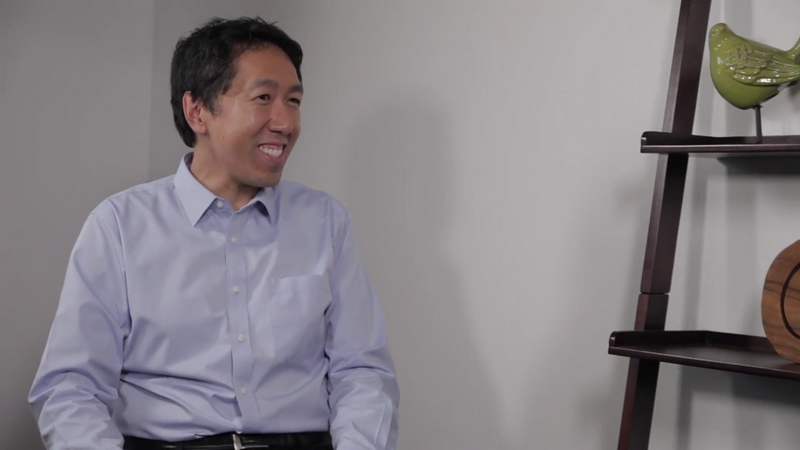
吴恩达：欢迎你，Rus，很高兴今天你能接受采访。
Rus：谢谢你，谢谢你，Andrew。
吴恩达：现在你是苹果公司的研究主管，你也有一个教职，卡内基梅隆大学的教授，所以我很想听听你的个人故事，你是如何一步步进入深度学习领域工作的呢?
Rus：是的，其实，某种程度上，我进入深度学习领域纯粹是运气，我在多伦多大学读的硕士，然后我休学了一年，我实际上在金融领域工作，很意外吧，那时候，我不太清楚是否要去读一个博士学位，然后发生了一些事情，发生了一些意外的事情，有一天早上我要上班路上遇到了Geoff Hinton，Geoff告诉我，嘿，我有这个好想法，来我办公室，我跟你说，所以我们基本上一起散步，然后他开始给我讲波尔兹曼机器，对比散度法还有其他算法，当时我并没有明白他在说什么，但真的，我真的很激动，太令人兴奋了，我非常兴奋，后来就这样，三个月内，我就跟着Geoff读博了，所以这是开始，因为那是2005，2006年的事了，这是一些原始的深度学习算法，使用受限玻尔兹曼机，无人监督的预训练，这些概念开始成熟，这就是一切的开始，真的是这样，那个特别的早晨，我偶然碰到了Geoff，完全改变了我未来的事业发展方向。
吴恩达：然后你其实是早期一篇关于受限玻尔兹曼机的论文的合著者，真正让神经网络和深度学习的概念涅槃重生，你可以告诉我更多关于那个研讨会的工作吗?
Rus：是的，这其实真的很激动人心，是的，那是第一年，我的PhD生涯的第一年，Geoff和我试图探索使用受限玻尔兹曼机的这些算法，使用预训练等技巧训练多层网络，具体来说 我们集中精力处理自动编码器，我们应该怎么高效的去做PCA的非线性拉伸呢?这是非常令人兴奋的，因为我们的系统能够处理MNIST数字，这是令人兴奋的，但那之后我们走的路，让我们看到这些模型真的可以推广到人脸识别，我还记得那时我们有这个Olivetti人脸数据集然后我们开始在想，是不是可以改善文档压缩，我们开始观察所有这些不同的数据，实值计数，布尔代数，用了整整一年，我还是博士生第一年，所以那是很充实的学习经验，但是 真的在六七个月内，我们已经能够得到非常有趣的结果，我是说非常好的结果，我想我们能够训练这些层次非常深的自动编码器，，这是当时还做不到的事情，用传统的优化技术做不到的事情，但接下来，这就变成了对我们来说非常激动人心的时期，那是超级激动人心的，是的，因为我那时不断在学习新知识，但同时，我们的工作出来的结果，真的很令人印象深刻。
吴恩达：所以在深度学习复兴初期，很多研究都集中在受限玻尔兹曼机上，然后是深玻尔兹曼机，还出来了很多令人兴奋的研究，包括你们组的一些研究，但玻尔兹曼机还有受限玻尔兹曼机器现在怎么样了?
Rus：是的，这是一个很好的问题，我觉得在早期，我们使用受限玻尔兹机器的方式，你可以想象一下训练一堆这些受限玻尔兹曼机，让你能够很有效地一次学习一层，有很好的理论基础，告诉你添加特定的一层之后，你可以在特定条件上证明它是有变分界限之类的，所以是有理论支持的，这些模型能够在预训练这些系统方面达到很好的效果，然后在2009年左右，2010年，计算力量开始出现了，GPU开始很强，我们很多人开始意识到，直接优化这些深层神经网络，可以得到类似的结果，甚至更好的结果。
吴恩达：所以只是标准的反向传播，不带预训练的受限玻尔兹曼机。
Rus：没错，没错，那之后大概过了三四年，大家都变得很兴奋，因为人们觉得，哇，你真的可以用预训练机制这么训练深层模型，然后，随着更多计算力量变强，人们突然发现，你可以直接做标准反向传播，那是2005年或2004年我们绝对做不到的事情，因为CPU计算要几个月的时间，所以这是一个很大的变化，另一件事，我们还没想清楚的是，如何使用玻尔兹曼机和深波尔兹漫机，我相信他们是非常强大的模型，因为你们可以把它们看成是生成性模型，它们试图对数据进行耦合分布建模，但是当我们开始研究学习算法时，现在学习算法，他们需要使用马尔可夫链，蒙特卡罗和变分学习等，它们并不像反向传播算法那样可以轻松扩展，我们还没有想出更有效训练这类模型的方法，还有卷积的使用，这些模型有点难以适应到现在的计算硬件，我还记得你当时有些工作用的是概率最大池化，来构建这些不同对象的生成模型，来构建这些不同对象的生成模型，但同时，训练这些模型还是很困难的。
吴恩达：可行性有多高呢?
Rus：是啊，可行性有多高呢?我们还是要弄清楚怎么办，另一方面，最近使用变分自动编码器的一些工作，例如，可以看成是可以看作是玻尔兹曼机的交互式版本，我们想出了训练这些模块的办法，是Max Welling和Diederik Kingma的工作，或者使用重新参数化技巧，我们现在可以在随机系统内使用反向传播算法，正在推动着各方面很大的进步，但是波尔兹曼机这边，我们还没想出应该怎么做到这点。
吴恩达：这实际上是一个非常有趣的视角，我实际上并不知道在计算机较慢的早期RBM，预训练真的很重要，只有计算硬件力量的上升才推动了到标准反向传播的转变，在社区对深度学习思想的演变方面，还有其他话题，我知道你花了很多时间思考这个，生成的无监督方法vs 监督的方法，你可以给我们分享一下你的想法是如何随着时间推移演变的吗?
Rus：是的，我觉得这真是，非常重要的话题，特别是如果我们考虑无监督，半监督或生成模型，因为某种程度上我们最近看到的很多成功案例是来自监督学习的，而在早期无监督学习主要被视为无监督预训练，因为我们不知道如何训练这些多层系统，即使在今天，如果你的系统面对的是大量无标签数据和一小部分有标签数据的样本，这些无监督的预训练模型建立这些生成模型可以帮到监督训练，所以我觉我们社区里很多人都抱有这样的信念，当我开始做博士后，做的都是生成模型并试图学习这些堆叠起来的模型，因为那时是训练这些系统的唯一途径，今天在生成建模领域里有很多工作，你们看看生成对抗网络，你们看看变分自动编码器，深度能量模型是我的实验室现在正在研究的，我认为这是非常令人兴奋的研究，但也许我们还没有把它弄清楚，再次，对于正在考虑进入深度学习领域的许多人来说，这个领域我觉得，我认为我们还会取得很大进展，希望在不久的将来。
吴恩达：所以无监督学习。
Rus：无监督的学习，对，或者你可以看成是无监督学习或者半监督学习，其中我们会给一些提示或者例子，说明不同东西的含义，然后丢给你大量的无标签数据。
吴恩达：所以这实际上是一个非常重要的见解，在深度学习的早期，那时计算机要慢一些，必须用到受限玻尔兹曼机和深玻尔兹曼机，初始化神经网络权重，但随着计算机变得更快，直接反向传播开始效果更好了。还有一个话题我知道你花了很多时间去想的，监督学习和生成模型，无监督学习的对比，你的看法呢?可以告诉我们，关于这个争议的看法是怎么随时间演变的?
Rus：我们所有人都相信在那里可以取得进展，就是这些玻尔兹曼机，变分自动编码器，GAN 所有工作，你认为这里很多模型都是生成模型，但是我们还没有弄清楚如何真正让它们变得可行，如何利用大量数据，即使对于.. 我在IT业界见到很多，公司有大量的数据，大量的未标记的数据，有很多注释数据的努力，因为现在这是取得进展的唯一途径，我们应该能够利用这些无标签数据，因为实在太多了，我们还没弄清楚如何做到。
吴恩达：所以你提到对于要进入深度学习领域的人，无监督学习是令人兴奋的领域，今天有很多人想进入深度学习做研究或应用工作，对于这个全球性的社区来说，要做研究或应用工作，你会有什么建议?
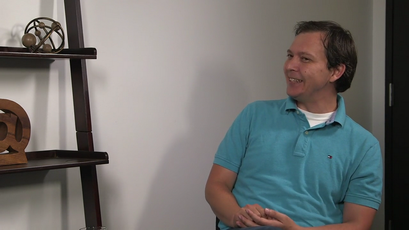
Rus：是的，我认为最关键的建议之一，要给进入这个领域新人的建议，我会鼓励他们尝试不同的事情，不要害怕尝试新事物，不要害怕尝试创新，我可以给你一个例子，当我是研究生时，我们正在研究神经网络，这些是非常难以优化的非凸系统，我还记得在优化社区的朋友聊天，他们的反馈总是这样，这些问题你们解决不了的，因为这些是非凸的，你们不了解优化，凸优化都那么难做，你们还要做非凸优化?然后令人惊讶的是在我们的实验室里，我们从来不关心这么具体的问题，我们正在考虑如何优化，看看能否获得有趣的结果，这种心态有效地推动了社区的发展，我们没有害怕，也许一定程度上是因为，我们没有认真研究优化背后的理论，但我会鼓励人们尝试，不要害怕，要试试挑战一些困难的问题。
吴恩达：是的，我记得你曾经说过，不要只学编写高层次的深度学习框架，应该实际了解深度学习的底层。
Rus：是的，没错，我认为，当我教深度学习课程时，我一直尝试去做的是，在作业里，我要求人们实际编写，卷积神经网络的反向传播算法，那很痛苦，但如果你做过一次之后，你就真正了解这些系统背后的运作原理以及如何在GPU上高效实现它们，我认为当你进入研究或工业界时，最重要的是你对这些系统实际在做的事情要有很深入的理解，所以我想这很重要。
吴恩达：既然你有学术界当教授的经验，也有企业经验，我很好奇，如果有人想进入深度学习领域读博和进入公司各有什么利弊?
Rus：是的，我认为这其实是个很好的问题，特别是在我的实验室里，我有各种背景的学生，有些学生想去走学术路线，有些学生想走工业路线，现在变得非常有挑战性了，因为在工业里你也能做出一流的研究，你也可以在学术界做出一流的研究，但利弊方面，在学术界，我觉得你有更多的自由来处理长期的问题或者如果你喜欢思考一些疯狂的问题，你想自由自在的工作，去研究，与此同时，在企业里的研究也很激动人心，因为很多情况下，你的研究可以直接影响到数百万用户，比如开发一个核心的AI技术，显然，在企业里你有更多的计算资源，能够做到非常惊人的事情，所以都有优缺点，这真的取决于你想做什么，现在环境非常有趣，有学术界转向工业界的，还有工业界的转向学术界的，虽然更少一点，但现在是非常令人兴奋的时代。
吴恩达：听起来学术界机器学习不错，企业界机器学习也很棒，最重要的是跳进去，对吧?选一个，跳进去。
Rus：这真的取决于你的喜好，因为你在什么地方都可以做出惊人的研究。
吴恩达：所以你提到无监督学习是一个令人兴奋的研究前沿，你觉得还有其他领域你觉得是令人兴奋的研究前沿吗?
Rus：是的，当然了，我想我现在看到，在现在的社区里看到，特别是在深度学习社区，有几个趋势，我认为有一个特别的趋于特别令人兴奋是深度加强学习领域，因为我们能够弄清楚，我们如何在虚拟世界中训练代理程序，这是过去几年里，我们看到很多的有很多进展，我们是如何把这些系统推广到更大规模上，我们如何开发新的算法，如何让代理程序互相沟通，我觉得这个领域，一般来说，你能和环境交互这些场合是非常激动人心的，我认为还有另一个领域令人兴奋，就是推理和自然语言理解的领域，我们可以建立基于对话的系统吗?
我们可以建立能够推理，能够读懂文本的系统，能够智能回答问题的系统吗?我认为这是现在很多研究的重点，然后还有另一类子领域也是，这个领域可以从很少的几个例子中学到知识，所以通常人们说是一次学习或迁移学习，你从环境习得某种东西，然后我给你一个新的任务，你可以很快地解决这个任务，就像人类一样，而不需要很多很多带标签的样本，所以这个概念是我们社区里很多人都想弄清楚的，我们应该如何做到，如何达到接近人类的学习能力。
吴恩达：谢谢Rus给我们分享所有的评论和见解，更有趣的是，能听到你的早年故事
Rus：谢谢 Andrew，是的，谢谢你的采访。
吴恩达：Yoshua你好，很高兴您能参加我们的访谈活动(字幕来源：网易云课堂)。
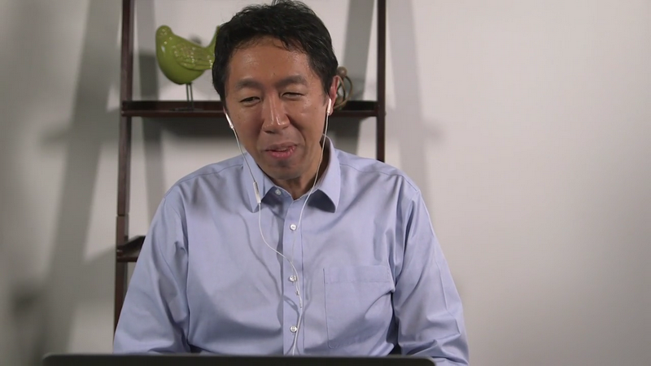
Yoshua：我也很高兴。
吴恩达：您不仅仅是深度学习方面的研究员，工程师，还是该领域和学术研究界的代表人物之一，我很想知道您是如何入门的，您是如何进入深度学习这个领域 ，并不懈探索的。
Yoshua：小的时候，我读了很多科幻小说和很多同龄人一样，1985年研究生阶段，我开始阅读神经网络方面的论文，当时特别兴奋，也逐渐对这个领域燃起了热情。
吴恩达：1980年代中期 1985年。您还记得当时读到那些论文的情形吗？
Yoshua：当时和专业人士们一起上经典的AI课程，我突然发现，这个领域研究的都是人类如何学习，人工智能，如何把人类学习与人工智能和计算机联系起来这样的问题，发现这类文献的时候我异常兴奋，于是开始拜读Geoff Hinton等人撰写的，关于联结主义的论文，我研究过循环神经网络，语音识别，HMN，图模型，之后我很快进入了AT&T贝尔实验室和麻省理工学院攻读博士后，并发现了训练神经网络的长期依赖问题，之后不久，我受聘来到蒙特利尔大学任教，我的年少岁月多半也都是在蒙特利尔度过的，过去几十年一直投身于此。
吴恩达： 您一定深有感触，谈谈您对深度学习的看法以及神经网络这些年的发展历程吧。
Yoshua：我们从实验，直觉认识入手，而后提出了一些理论，现在我们在认识和理解上清晰了很多，比如为什么Backprop（反向传播）如此行之有效，为什么深度如此重要，当时我们对这些概念没有任何可靠的论证依据，2000年初，我们开始研究深度网络的时候，我们直觉认为神经网络更深才会更加强大，但是我们不知道应该如何深化，如何优化，当然，我们最初进行的相关实验也未能成功。
吴恩达：与30年前相比，您认为哪些最关键的设想得到了时间的验证，而哪些又错得最让人意想不到我犯过的一个最大的错误就是和当时90年代所有人一样，我也认为执行backprop需要光滑非线性算法，因为我觉得，如果当时我们有非线性矫正算法，它有些部分会比较平坦，训练起来就很难了，因为很多地方的导数都是0，2010年前后，我们开始在深度网络中尝试Relu算法，我当时执着地认为，我们应当注意导数为0区域上的神经元会不会太饱和，最终，ReLU比sigmoids函数的效果更好，这出乎我的意料，我们探索这个函数是生物连接的原因，并非我们认为它更容易优化，但结果证明它效果更好，之前我还认为它训练起来会比较难。
吴恩达：请问，深度学习和大脑之间有什么关系，虽然有明确答案，但我更想知道您对此的看法。
Yoshua：最初让我关注神经网络的一种见解是，连接主义者提出信息是分布在被激活的神经元中，而不是由祖母细胞来描述的，他们称之为“符号描述”，它是传统AI的观点，我依然相信这是非常重要的信息，甚至近期，人们重新发现它的重要性，它确实是一项重大发现，深度学习是后来才提出的，大约在2000年初，但是我90年代研究的并不是这些。
吴恩达：是的，我记得，很早以前，您曾搭建过许多相对不深的词向量分布式表达。
Yoshua：是的，没错，那是90年代后期，我很感兴趣的内容之一，我和我兄弟Samy一起做了尝试就是使用神经网络来解决维数灾难的问题，它是统计学习中的一个核心问题，我们能够以一种非常高效的方式，利用这些分布式表达来表示许多随机变量的联合分布，效果很好，之后我把它扩展到词序列的联合分布，这就是词向量的由来，因为我当时认为，这可以实现对拥有相似语义的单词的泛化。
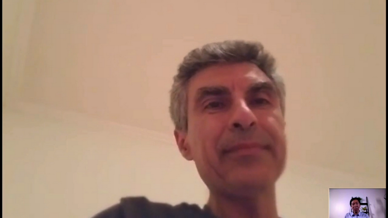
吴恩达：过去20年，您的研究小组完成了多项研究，提出了很多想法，短短几分钟之内无法细数，我好奇的是，小组中的哪项研究或想法，最让您感到自豪。
Yoshua：好的，我前面提到了长期依赖的研究，我想人们依然不能很好理解它，然后是我刚提到的维数灾难，还有近期应用于神经网络的联合分布，它是由Hugo Larochelle负责的涵盖了应用于联合分布的，学习词向量的各项工作，然后，我觉得，我们最被关注的研究就是深度学习在自动编码器和RBMs堆栈上的应用，还有就是，如何更好地理解用初始化参数解决深度网络训练的难点，还有深度网络中的梯度消失，这项研究及后续实验体现了分段线性激活函数的重要性，其他重要研究还包括无监督学习，降噪自动编码，GANs，这些都是当前非常流行的生成式对抗网络，我们对基于注意力机制的神经网络机器翻译的研究，对翻译工作起到了很重要的作用，现在已经应用到工业系统中，如谷歌翻译，对注意力机制的研究确实改变了我对神经网络的看法，我们曾经认为神经网络只是机器，不过是向量之间的映射，但基于注意力机制，我们现在可以处理各种数据结构，这的确打开了很多有趣领域的大门，生物学联结方面，最近两年我一直在研究的一个课题是，就是我们如何想出像backprop这样的概念，而且大脑也可以执行，我们已经发表了几篇论文，神经科学界人士对此很感兴趣，我们将继续对这个课题的研究。
吴恩达：我知道你一直关注的一个话题就是，深度学习与大脑之间的关系，能谈谈这个吗？
Yoshua：我一直在思考两者这间的生物学关联，而且平日里也经常"幻想"，因为我觉得它就像个谜题，首先通过学习大脑，研究大脑，我们有这么多的证据，如穗时序依赖型可塑性，但另一方面，们又有这么多关于机器学习的概念，比如针对一个目标函数对整个系统进行全局训练，比如Backprop，，么Backprop到底是什么意思，还有 "信用分配"到底是什么意思，当我开始思考大脑如何能像backprop一样工作时，就想到，许在backprop背后，在着更通用的概念，可以让backprop更高效地工作，也许有很多方法可以完成信用分配，这也呼应了增强学习领域的一些问题，所以说这一点很有意思，一个简单的问题开始，你会一步步思考更多的问题，而让你把这么多不同的事物联系起来，像在解一个大谜题，这个过程持续了几年，我要说一点，这些所有的尝试大一定程度上是受了Jeff Hinton的启发，他在2007年的时候发表过一次演讲，当时是第一个关于深度学习的研讨会，他讲了他对于大脑工作方式的想法，比如怎么利用时间编码，来辅助backprop的一些工作，这件事对我近几年的一些探索起到了引导性的作用，说起来这一路走来，已经有10多年了。
吴恩达：另外我经常听到你谈到的一个话题就是无监督学习，能说说关于这方面的想法吗？
Yoshua：当然，无监督学习非常重要，目前业内的系统都是基于有监督学习的，这就要求人类先定义出当前问题的一些重要概念，并在数据库中讲这些概念标记出来，目前的玩具问题服务，系统都是基于这个的，但人类本身其实可以做得更好，人类可以探索世界，通过观察发现新的概念并与世界互动，2岁的小孩，能自己理解直观物理概念，比如他们理解重力，理解压力，理解惯性，理解液体，固体，而且他们的父母并没有给他们解释过这些概念，那他们是怎么理解的呢，这就是无监督学习所要解决的问题，不是简单地在数据库中做不做标识的问题，而是如何构建一个精神结构，从而解决如何通过观察来解释世界，最近，我还在尝试，把无监督学习和增强学习整合在一起，因为我相信，我们在努力尝试解释的重要基础概念，原本是有很强的指示的，但我们可能没有把它们联系起来，也就是说，人类或机器如何通过与世界互动，通过探索世界，尝试不同的事物和控制事物，这些是我认为与无监督学习紧密关联的，所以我15年前一开始研究无监督学习时，从不同的机构，到RBM等等，最主要关注的是如何实现学习"良好的表现"，当然现在这个问题也仍然重要，但是我们不确定的是到底如何定义“良好的表现”，比如如何确定一个目标函数，过去几年我们试了好多方法，这也是无监督学习研究的一个魅力所在，解决方案的想法有很多，解决问题的方式有很多，也许明年我们就会发现一个完全不同的方案，也许大脑的工作方式跟我们现在所知的完全不一样，目前该领域还没有进入渐进式研究，它本身还是在探索一个完全未知的领域，我们现在还不能清晰地确定什么样的目标函数，能够评估一个系统在无监督学习上是否表现的很好，当然，这很有挑战性，但同时它也意味着更多未知的可能，而这一点正是研究人员最为着迷的，至少我是这样。
吴恩达：今天，深度学习已经得到了长足的发展，我想目前不管对于谁来讲，都不太可能遍历现今所有关于深度学习的著作了，所以我比较好奇，关于深度学习，你最感兴趣的是什么。
Yoshua：我比较有想法，我感觉现在关于深度学习的研究，已经脱离了我心目中最理想的方向，我感觉现在机器经常出现些小错误，说明它对世界的认知还很表面化，所以最让我兴奋的是，我们现在的研究方向，不是要让我们的系统实现什么功能，而是回到最本原的原理，如何让电脑来观察世界，与世界互动，发现世界，即使世界很简单，就像编一个电脑游戏，我们也没法做得很好，但是这点很好，因为我不用跟谷歌，Facebook，百度他们竞争，因为这就很根本的研究，谁都可以做，而且在家里的车库里就可以了，当然，解决这个问题的方向有很多，但我也看到很多沟通互动功能方面，深度学习和增强学习的融合起着很重要的作用，我非常激动的是，这个方向的研究进度，，在实际应用方面已经有了很大的成就，因为如果看一下我们在实际应用方面面临着巨大的挑战，比如如何应对新的领域或新的范畴，现成的成功的案例很少，但是人类解决这些问题是完全没有问题的，而对于这些迁移学习的问题，如果我们能够让计算机更好地理解世界，处理这些就会效果好很多，更深度的理解，是吧，眼前的世界在发生什么，我看到的是什么，如何通过行为来影响我的所见所闻，这些是我最近最为关心的问题，另外过去20年人工智能面临的老问题，深度学习都已经有了变革性的发展，因为深度学习的大多数成功是在认知层面的，那接下来的目标呢，接下来的就是高级条件，就是在抽象层面明白事物的原理，现在我们在研究如何能让机器理解更高级的抽象层面，目前还没有达到，所以我们要继续努力，我们要研究原因，研究信息的时序处理，要研究因果关系，如何让机器自己来发现这些事物，未来可能还需要人类的指导，但主要还是要自主完成。
吴恩达：根据你的描述来看，你是喜欢使用研究方法的，比如你在做的"玩具问题"实验——这里完全没有贬意，是的，但只是对于小问题，而且你相信这个未来可以转到大的问题上。
Yoshua：是的，完全可以，当然我们先要一点点加大规模，从而最终实现，对这些问题的解决，但是之所以先从玩具问题入手，是因为它可以让我们更清楚地明白我们的失败，从而开始对直观物理概念认识的研究，让机器更容易地理解这些概念，算是经典的分步解决方法吧，另外，我觉得有些人可能没想过的是，其实研究周期是可以快很多的，如果几个小时就能做一个实验，我的进度就可以快很多，如果需要尝试一个较大模型，用来捕捉常识，和普通知识层面的事物，当然这个最后我们是要去做的，只是现有的硬件，每次实验都要花太多时间，所以在硬件运行速度提到上千上百万倍之前，我只能先做玩具问题的实验。
吴恩达：您还说过，深度学习，不仅仅是一门工程学科，还要多下功夫去了解其中的来龙去脉，可否分享一下您的看法。
Yoshua：是的，的确如此，我们目前的工作（方式）有点像盲人走路，我们运气不错，也发现了一些有趣的东西，但是，如果我们能够稍微停一停脚步，试着以一种可以转换的方式理解我们所做的事情，因为我们要归于理论，我所说的理论不一定是数学，当然我喜欢数学，但是我不认为一切事物都要数学化，而是要逻辑化，并不是我可以让别人相信这样有用，可行，这才是最重要的，然后再通过数学来强化和精炼，但更多的是理解，还有做研究，不是要成为下一个基准或标杆，或者打败其他实验室，他公司的人，更多的是，我们应该提出哪些问题来帮助我们，更好地理解我们感兴趣的现象，比如，是什么导致更深度神经网络，或循环神经网络很难训练，我们已经有了一些认识，但还有很多东西我们不了解，所以我们设计实验，可以不以获得更好的算法为目的，而是以更好地理解现有算法为目的，或者研究某算法在什么情况下表现更好并找到原因，为什么才是真正重要的，科学的意义就是提疑解疑。
吴恩达：现如今，有好多人希望进入这个领域，您会给那些想进入AI和深度学习领域的人一些什么建议呢？我知道在一对一活动上，您已经回答过很多次了，不过我还是代观看视频的所有网友问一问。
Yoshua：首先大家可以从事的工作和目的各不相同，研究深度学习和应用深度学习来构建产品，所需要具备的东西可能并不一样，在认知水平上，这两种情况是不同的，但是无论哪种情况都需要亲身实践，想真正掌握一门学问，比如深度学习，当然，也需要大量阅读你必须自己动手编程，我经常面试一些使用过软件的学生，现在有太多即插即用的软件，使用者根本不了解自己在做什么，或是只停留在粗浅了解的程度，一旦出现问题，使用者很难解决，也不知道原因，所以大家要亲自实践，即便效率不高，只要知道是怎么回事就好，这很有帮助，尽量亲自动手。
吴恩达：所以不要用那种几行代码就可以解决一切，却不知道其中原理的编程框架。
Yoshua：没错，没错，我还想说的是，如果可以的话，尽量从基本原理入手获取认识，真的很有帮助，当然，平时还要多阅读，多看看别人的代码，自己动手编写代码，多做实验，要真正理解自己做的每一件事，尤其是科学研究层面，多问问自己，我为什么要这么做，人们为什么要这么做，也许书中就能找到答案，所以要多读书，如果能自己搞清楚当然更好。
吴恩达：很酷的建议，我读了您和Ian Goodfellow、Aaron Courville合编的书，各方评价很高。
Yoshua：谢谢， 谢谢，是的 ，销量不错，有点超出预料，我感觉现在读它的人要比能读懂它的人多，呵呵呵，ICLR大会论文集可以说是，优秀论文最集中的所在，当然，NIPS，ICML和其他大会也有非常优秀的论文，但如果你想阅读大量优秀论文，去看看最近几年的ICLR大会论文集就好，你会对这个领域有一个良好的认识。
吴恩达：酷，有人会问 ，关于深度学习，如何才能做到掌握和精通？对此您有什么看法和建议呢。
Yoshua：这个取决于你的背景，不要畏惧数学，只管发展直觉认识，一旦在你在直觉经验层面得心应手了，数学问题会变得更容易理解，好消息是，不需要攻读五年博士也可以精通深度学习，你可以很快速地上手学习，如果你具备良好的计算机科学和数学功底，几个月时间，你就可以学到足够的应用知识来构建系统，并开始进行研究性实验，接受过良好培训的人可能6个月左右吧，或许他们对机器学习一无所知，但是，如果他们精于数学和计算机科学，学起来会非常快，当然，这意味着你要具备良好的数学和计算机科学背景，有时候，计算机科学课程上学到东西还远远不够，你还要继续学习，尤其是数学知识，比如，概率，代数和最优化。
吴恩达：了解，还有微积分。
Yoshua：对，对，还有微积分。
吴恩达：非常感谢Yoshua与我们分享这些看法，见解和建议，虽然认识您已久，但很多早期经历的细节我也是今天才知道，谢谢。
Yoshua：也谢谢Andrew制作了这样一个特殊的访谈以及现在所致力的事情，希望能够为大家所用。
吴恩达：欢迎你，元庆，今天你能参与我们的活动，我真的很高兴。
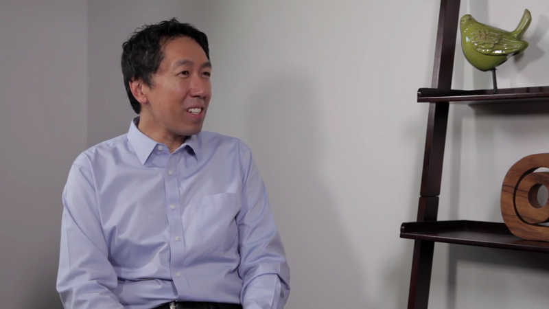
林元庆：没问题。
吴恩达：如今你是IT届的领头羊，当中国政府寻求英才，去着手建立国家深度学习实验室时，他们发掘了你，我认为在深度学习领域，你可以说是全国第一人，我想问一些关于你工作的一些问题，但在这之前，我想听听你的个人经历，那你是如何发展到做现在的工作的？
林元庆：好的，事实上，在我读博士之前，我的专业是光学和物理学有很多共同之处，我认为，我的数学基础很坚实，我来美国之后，我就想什么专业能做我的博士课题？我就想，好吧，我可以选择光学或者其他什么的，早在2000年的时候，我觉着那时候纳米技术很火，但我当时就想也许我应该着眼于更激动人心的东西，恰巧那时有个好机会，我在宾夕法尼亚大学上课，在那儿，我认识了Dan Lee，之后，他成了我的博士导师，我就想机器学习是很棒的一件事情，我兴奋异常，然后换了专业，因此我是在宾夕法尼亚大学读的博士，我的专业是机器学习，我在那呆了5年，很令人兴奋的时光，我学到了很多东西，很多算法甚至是PCAs，我以前从不知道那些东西，我感觉每天都会学到新的东西，所以对我来说，那是极其令人激动的经历。
吴恩达：那是你许多新尝试之一，你做了很多工作，尽管在那些时代并不为人所欣赏。
林元庆：对，确实是，所以我认为NEC是个神奇的地方（NEC：美国智能图像研究院），刚开始我在那儿的身份是一名研究人员，我也喜欢，学到很多东西的感觉，事实上，在NEC的后期，我开始研究计算机视觉方向，说真的，在计算机视觉领域，我起步相对较晚，那时 我做的第一件事是参加了ImageNet大规模视觉识别挑战赛，那时这个比赛第一年举办，我负责一个团队研究一个项目，很幸运，我们实力很强，我们得了第一，以绝对的优势得了第一。
吴恩达：所以你是ImageNet挑战赛冠军的第一位得主？
林元庆：是的，我在那场会议上做了演讲，对我来说，那是一次很棒的经历，那让我接触到了如此大型的计算机视觉技术，从那时起我就开始研究这种大型问题了，当纽约时报头版文章发表后，之后关于AlexNet也被发表时，我真的很震惊，我想，哇，深度学习是如此强大，从那以后，我在此方面付出很多努力。
吴恩达：作为中国国家深度学习实验室的主任，你们肯定正研究很多振奋人心的项目，那对正在观看的全球观众而言，关于这个实验室，他们应该了解些什么？
林元庆：国家工程实验室的目标就是建立一个巨大的深度学习的平台，希望是最大的一个或至少在中国是最大的，这个平台会给大家提供深度学习的框架，类似于PaddlePaddle，我们会提供大规模的计算资源，我们还提供庞大的数据库，如果大家能够能在这个平台上开展研究或开发好的技术，我们会提供巨大的应用空间，比如说，技术在巨大的应用如百度上被证明，技术水平就可以融合进来并对其做出改善，因此，我们认为整合这些资源，我认为会造就一个强大的平台，我各举一个例子，比如说，我们现在发表了一篇文章，另一个人想要重复操作的话，最好的方法就是在某平台处提供代码，之后你就可以把代码下载到电脑上，，你会尝试寻找某处的数据组，然后你大概也需要得到好的计算能力，以便让你的计算资源运转如飞，所以这一切会让你省些功夫，在国家实验室工作将会变得很容易，如果某些人应用此平台做一些工作，写一些文章，实验室能在平台上拥有这些代码，计算架构已经建立起来了，数据也是，基本上你只需要一根线把数据库连接起来，所以，这可以给计算机科学重复性问题的损失带来巨大改善，所以，很简单的，在几秒之内，你就可以开始学习文献上的一些东西，对，这是很强大的，所以，这只是我们工作中的一个例子，以确保我们提供给整个社会和产业一个真正有效的平台。
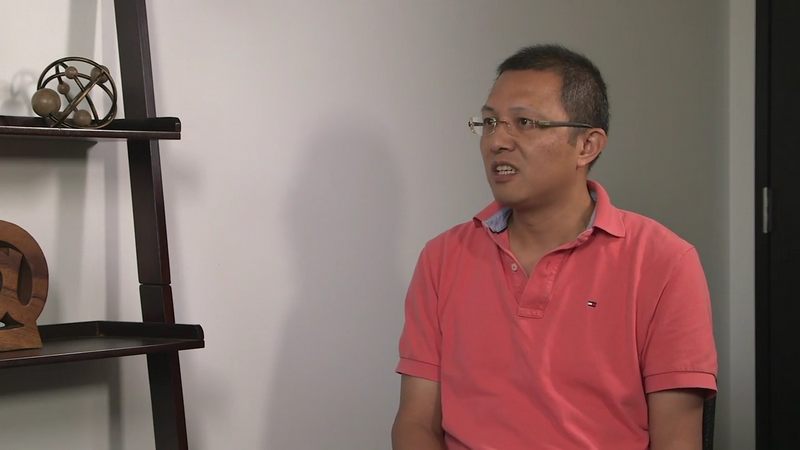
吴恩达：太神奇了，这确实加速了深度学习研究。
林元庆：没错。
吴恩达：你能透露下中国政府给国家深度学习实验室提供了多少资源吗？
林元庆：我认为，对于国家工程实验室而言，政府可以投资建设一些基础设施，但我认为更重要的是这将会成为中国的一个旗舰机构，引领许多有关深度学习方面的研究，包括像国家项目，法律政策等，事实上这是很有效的，我认为百度，我们很荣幸拥有这个实验室。
吴恩达：你可以说是居于中国深度学习领域的核心地位，中国有很多项目，全世界的观众都还未曾意识到或见到，那国外的人们，应该对中国的深度学习领域有哪些了解呢？
林元庆：我认为在中国，尤其是过去的几年，深度学习充实了一个产品，此领域的确在急速发展，从搜索引擎到，比如说，词组识别，监控，乃至电子商务等许多方面，我认为，他们正在深度学习领域投入巨大的努力，并充分利用技术使这个产业变得更有影响力，总体而言高科技的发展是很重要的，我认为对我来说，能和许多人分享这些，我们相信，这是很重要的，这通常被称为正向循环，举个例子，我们开始构想建立一些技术，这些技术会有一些初始数据，也会有一些初始算法，这些会形成服务的初始产品，接着我们能获得用户的数据，其他人会得到更多的数据，所以，我们就可以研发更好的算法，因为我们看到更多的数据就会找到更好的算法，于是我们就有了更多的数据和更好的算法，我们就可以为产品服务提供更先进的技术，然后我们也绝对希望会吸引到更多的用户，科技变得更加先进，接着，我们就可以得到更多的数据，这是非常好的积极地举措，这也是很特别的，尤其对于AI相关的科技和比如激光等传统科技而言，我以前研究过那些，所以，科技发展的过程会变得很线性，但之前AI科技因为有了正向的循环，你可以想象科技肯定会发展的非常快，当我们进行研究时，这也是很重要的，当我们设计ND时，我们在快速发展时期的方向研究，，但如果整个产业没能够建立起这个正向循环，如果我们没能够建立起这个强大的正向循环，这很可能行不通，因为有远见的其他人会建立起此循环，他们会比我们更快的到达那个水平，对我们而言，这个逻辑很重要，需要我们注意，比如说，你需要一个公司，那我们该在哪个方向研究，不该在哪个方向研究，，这绝对是需要注意的因素。
吴恩达：如今，无论在中国，还是美国乃至全球有许多人想进军深度学习和AI领域，对于那些人你有什么建议？
林元庆：如今，初始进军者肯定拥有开源框架，我认为这是很有效的，当我开始研究深度学习时，当时并没有很多开源资源可用，但今天，在AI 特别是深度学习领域，是很好的一个社区，那有很多很杰出的人才，就像是TensorFlow，一个caffe，他们也称之为caffe 2是吧？在中国，我们有很好的PaddlePaddle甚至是在网上，他们有很多教学课程，教你怎么利用那些资源，还有，如今也有很多公共可用的标准，人们会看到技术高超，富有经验的先驱，比如，他们是怎么利用那些标准的，总的来说，是接触深度学习的好时机，我认为，这些都是很好的出发点。
吴恩达：你是如何得到这些启发的？
林元庆：事实上，我曾走在南辕北辙的路上，我学习了PCA LDA等其它之后，才学习的深度学习，总体而言，我感觉这也是条不错的学习道路，打下了很多基础，我们学习了图模型，这些都是很重要的，尽管现在，深度学习发展的无法想象，但知道一些规则会给你关于深度学习的运作模式很好的直觉感，然后有一天，深度学习和法则之间会产生关联，就像框架和途径那样，我认为这之间存在很多联系，这些法则丰富了深度学习，我的意思是为深度学习提供了多样途径，是的。我认为开放源码是很好的开始，那是很有效的资源，我还会建议你学习一些有关机器学习的基础知识。
吴恩达：谢谢你，听起来很棒，即使我认识你很长时间了，我现在都没想到你思考的很多细节，很感谢你。
林元庆：谢谢让我参与。
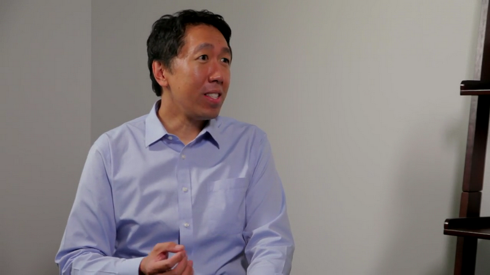
吴恩达：谢谢你，Pieter，能够来到这(字幕来源：网易云课堂)，很多人都认为你是一位有名的机器学习，深度学习，机器人技术的研究者，我想让更多人知道你的故事，你是怎么开始的呢。
Pieter Abbeel：这是个好问题，要是你问14岁的我，我的志向在什么，可能就不会是现在的答案，那时候我想当职业篮球运动员，我不认为我能做到。
吴恩达：机器学习侥幸做成了，篮球应该没戏。
Pieter Abbeel：是的，没戏，打篮球很好玩，但是变成职业不太行，在学校我最喜欢物理和数学，所以之后学工程就比较自然，也就是实际应用物理和数学，之后，我本科毕业于电子工程后，我不太确定做啥，因为工程相关的一切都太有趣了，去懂得一个东西如何运作很有趣，建一个东西也是某种意义上，AI赢了，因为看起来它在某种程度能帮助所有学科，并且它看起来是一切东西的核心，你会思考一个机器怎么思考的，那可能是一切的核心，也就不用选某个特定的学科。
吴恩达：我一直在说AI是新的电力，听起来14岁时的你，已经有很超前的意识，过去几年你在深度增强学习中贡献很大，现在情况如何，为什么深度增强学习突然变得重要。
Pieter Abbeel：在我研究它之前，我研究了很多增强学习，与你和Durant在斯坦福的时候， 当然了，我们做了自主直升机飞行，后来去伯克利和我的学生们，做了个会叠衣服的机器人。可以说是用组合的学习方式来描述，做成一些不学习就无法做成的事，也结合了领域知识才能完成，这很有趣，因为你需要领域知识，想办法学到很好玩，但同时每次想做成新的应用都会很耗时，需要领域知识和机器学习知识，在2012年，通过Geoff Hinton多伦多小组对ImageNet的研究结果突破AlexNet证明监督学习，突然之间大大减少了工程量，AlexNet中所用的工程量非常之小，让我开始思考，我们该用类似观点回顾增强学习，看我们能否用增强学习做与监督学习同样有趣的事。
吴恩达：听起来你早于，大多数人前，发现深度监督学习的潜力，展望未来，你看到下一件事是什么，你对下一阶段有什么样的预测在深度增强学习中。
Pieter Abbeel：我认为深度增强学习有趣在于，某种程度上比监督学习有更多的问题，在监督学习中问题在于输入，输出，映射；在增强学习中是数据是从何而来的，就是探索问题本身，当你有数据之后，你怎么做信用赋值，你怎样理解早期做什么，才能之后受益以及安全问题，当你有自主收集数据的系统后，在很多情况下其实很危险，想象一家自驾车公司说，我们只会用深度增强学习来运行车辆，听着就像会有很多事故，在真正起作用之前。
吴恩达：你需要反面例子，对吧。
Pieter Abbeel：是需要反面例子，希望也有正面的，我觉得深度增强学习还有很多挑战，
在解决特定问题时及如何做成功，深邃的部分在于表达，增强学习本身还有很多问题，我个人觉得是深度学习的进步，一部分增强学习的谜团能被解开，就是表达的部分，如果有模式，我们可能表达为一个深度网络，并抓取模式，怎么分解模式仍然是增强学习中很大的挑战，我认为大挑战在于，如何让系统在长时间线上保持推理能力，现今很多深度增强学习，都是短时间线上的。还有很多问题是，如果对五秒的反应不错，对整个问题的反应都会不错。五秒和一天的规模相差很大，或是让机器人或软件主体保持一辈子的功能。我认为这里面有很多挑战，安全方面的挑战是如何安全持续地学习，当效果已经很不错时。所以，再举个例子，很多人对自主驾驶车很熟悉，让它们比人开车更好，假设人在每三百万英里，碰到一次很糟的事故，会需要很长时间才会有负面数据，如果和人一样好的话，但你想要更好，那么数据的收集就变得很难，很难得到让系统表现更好的数据，探索其中有许多牵连的挑战，我最兴奋看到的是，我们能不能往后一步，还是能学增强学习的算法，增强是很复杂，信用赋值也是，探索更是，就像对于深度学习中的监督学习，可以做到替代领域知识，可能也能有程序--增强学习的程序也能做到所有，取代我们亲自设计细节。
吴恩达：比如整个程序的回报函数。
Pieter Abbeel：这就需要学习整个增强学习程序，可能是，想象一下，你有这么个程序，不管是什么，你给它一个问题，看多久才能学会，然后发现，嗯，花了挺久，让另一个程序来修正原本这个，加完这一步，试试看，要是学的快多了，修正的就很好，然后从此想办法继续进步。
吴恩达：我明白了，奠定基础。
Pieter Abbeel：这可能和可用的计算量有关，就像在内环中运行增强学习，现在，运行增强学习是最后一步，越多计算量越有可能运行的了，就像在内环的增强学习是更宏观算法的一部分。
吴恩达：从14岁起，你在AI工作有二十多年了，你怎么理解AI这段时间的进化。
Pieter Abbeel：我试着理解AI的时候很有趣，因为其实与我在斯坦福的硕士学位相符，其中有很多领袖我亲自交流过的，比如John McCarthy，但用的方法与众不同，相比较2000年时，大多数人在做的事，然后和Daphne Koller的交谈，形成了我对AI最初的想法，她的AI课程，她的概率图模型课，让我真正产生兴趣，随机的变量如何应用于简单的分布，再被分成子集变量，然后其他的结论，都会让你知道好多，要是能让它计算起来也容易，那就很具挑战了，从那之后，我开始攻读博士，你到斯坦福后，是个很棒的现实提醒，也就是，不该去检验你研究里的度量是否正确，而是去看一种关联，你在做的事情和影响你的东西之间有何关联，你的研究实际改变了什么，而不是具体里面出现的数学。
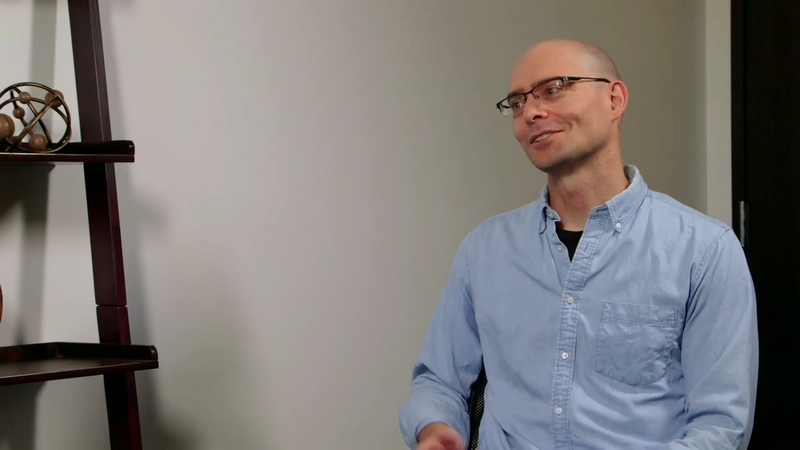
吴恩达：对，很棒，我没发现之前遗忘了这点。
Pieter Abbeel：是的，这是其中一件，除了大多数人在问的，哪一个Andrew给的意见，一直在影响你，是确保你能看到这种关联性。
吴恩达：你已经并且会继续在AI领域有很棒的职业前途，对一些在看视频的人，要是他们想入门AI，你有什么意见。
Pieter Abbeel：我想现在是进入AI的大好时机，需求量是如此之高，工作机会如此之多，有大量研究课题，也有大量创业机会等等，所以我很肯定决定入行是很机智的决定，你们中的大多数都能够自学，不管是不是在学校里，有好多好多网课，比如andrew的机器学习课，也有，比如说，Andrej Karpathy的深度学习课，也有线上视频，作为开始很棒，Berkeley也有增强学习的课程，所有课都在网上，都是很棒的入门方式，很重要的是，你自己要真正着手去做，不是只看看视频，要亲自试，可以用TensorFlow，Chainer Theano，PyTorch等等，随便你喜欢哪个，开始是很容易的，进展也会很快。
吴恩达：只要不断练习，对不，实际操作并关注什么成功了，什么没成功。
Pieter Abbeel：Mashable上周有篇文章，讲一个英国16岁，Kaggle比赛中的领导，里面提到他跑去学习，在网上找到东西，自学了一切，从未上过任何正统课程，一个16岁的少年能在Kaggle上有这么强的竞争力，说明是真的可能。
吴恩达：我们生在好时代，对人们学习的好时代。
Pieter Abbeel：完全正确。
吴恩达：还有个应该常被问到的问题是，要是有人想进入AI机器学习，深度学习的领域，他们该读博还是去大公司工作。
Pieter Abbeel： 很大程度上取决于你能得到的指导，在博士学位里，基本肯定的，是教授的本职工作，也是你的导师，会来主动找你，竭尽他们所能去成就你，帮助你在任何领域，比如AI，得到成功，有很多用功的人，有时会有两个导师，那是他们的本职工作，也是为什么他们当了教授，大多数教授都能帮助学生做更多事情，但不是说在公司里不是这样，很多公司有很棒的导师并且很爱帮助教育和推进其他人等等。只不过是，可能不会有那样的保障，不会像攻读博士一样，而博士的一大优点，就是你肯定能学到好多并且总有人能帮助你学习。
吴恩达：取决于公司和博士项目本身。
Pieter Abbeel：完全正确，但是我想，主要还是得自己能学很多东西，要是自学的很快，再加上一个更有经验的人，能加速过程，因为他们的职责就是帮助推进你的进步。
吴恩达：你是深度增强学习中很有名的领袖之一，那么是什么样的东西，在深度增强学习中已经很成功了。
Pieter Abbeel：关注深度增强学习中的成功例子，非常非常引人入胜，比如说，通过像素学习玩Atari，处理像素也就是被处理的数字，被变成一个游戏中的行动，然后，举个例子，我们在Berkeley做过的一些研究，造了会走路也有回馈的模仿型机器人，只是简单的告诉它越往北走越好，对地面影响越小越好，它突然会选择，走路或跑步，即使并没有人告诉它什么是走和跑，或让机器人学讲给儿童的故事，并想法子组在一起，创造更多开放结局等等。
我认为有趣的是，它们能学习，从原始的感觉输入到控制，比如发动机中的扭矩，但是是同时完成的，有趣在于你能用一个单一算法，比如，推力是一瞬间的，你可以学习，可以让机器人学会跑，学会站立，可以有两条腿的机器人，再换成四条腿的，只要用同样的算法，它都会跑，所以增强算法不用改变，非常宏观，Atari游戏也是如此，每个游戏里DQN都是同一个DQN，当它开始进入，还未曾实现的边界后，它能为每一个任务从头一点点学起，但要是能重复利用，之前学过的东西，更好了，那样学下一个任务就更快了，这是目前未能实现的事情，本质上，它总是从头学起。
吴恩达：你觉得多快，就能看到使用深度增强学习的机器人，出现在我们身边，被广泛应用在全世界。
Pieter Abbeel：我认为真实情况是，从监督学习开始，行为克隆人类的工作，我觉得会有很多业务会建立起来，但总是有人类在幕后指挥工作，比如Facebook的信息助手，像这样的助手能被建起，但背后一定有人，做大量工作，机器学习能做人所做的事，并开始为人们提建议，人类会被提供，有限的几个选择，过一阵子，就能变得更好，可以给增强学习，一些实际目的，而不是让人在幕后工作，是实际给它们目标去完成，比如，两者中哪个能更快计划好会议，或多快能定好机票，或是花了多长时间，满意程度如何，不过可能会需要大量克隆人类行为的引导程序，去告诉它们怎么做。
吴恩达：听起来行为克隆就是监督学习，去模仿人在做的事，之后逐渐增强学习会能思考的更长远，这样总结合适吗？
Pieter Abbeel：我觉得是，单因为观察增强学习，从头开始，就很有意思，超级有趣，很少有比观察增强学习机器人从啥都不会到发明创造更好玩的事了，不过非常耗时，而且不总是那么安全。
吴恩达：太谢谢你了，这个采访太棒了，我很荣幸我们有这次聊天机会。
Pieter Abbeel：谢谢你邀请我，我非常感谢。
吴恩达：欢迎Andrej，今天你能来我很高兴。
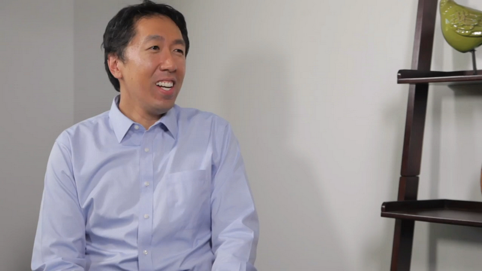
Andrej：是的，谢谢你的采访邀请。
吴恩达：人们已经很熟悉你在深度学习领域中的工作了，但不是每个人都知道你的个人故事，不如你就告诉我们，你是怎么一步步完成深度学习的这些工作的?
Andrej：是的，当然好，我第一次接触深度学习时，还是一个在多伦多大学的本科生，那时Geoff Hinton就在那里，他带一门深度学习课，那时候用的是受限玻尔兹曼机，在MNIST手写数字集上训练，但我真的很喜欢Geoff谈到训练网络的方式，他会用网络的智能，这些词，我那时想，这听起来，当我们训练这些数字时会发生奇迹，这是我第一次接触，不过那时候我没有了解很多细节，后来当我在不列颠哥伦比亚大学读硕士时，我上了一门[ Nato Defreiter]教的课，还是机器学习，那时我第一次深入了解这些网络和相关知识，我觉得很有趣，当时我对人工智能非常感兴趣，所以我上了很多人工智能课，但是我看到的很多东西没那么令人满意，那时课程介绍了很多深度优先搜索，广度优先搜索，Alpha-Beta剪枝各种方法，我那时不太懂，我并不满意，当我第一次在机器学习课程中见到神经网络时，我觉得这个词更技术一点，知名度没那么高，人工智能大家都能说上一两句，但机器学习就更小众一点，可以这么说吧，所以我对人工智能不满意，当我看到机器学习，我就想这才是我要花时间研究的AI 这才是真正有趣的东西，就是这些原因让我开始走这条路，这几乎是全新的计算范式，可以这么说，因为正常情况下是人类在编程，但是在这种情况下是优化程序自己写代码，所以当你建立了输入输出规范之后，你只需要给它喂一大堆例子，优化程序就自动编程，有时候它写出的程序比人工的还好，所以我觉得这只是一种非常新颖的编程思路，这就是让我感兴趣的地方。
吴恩达：然后通过你的工作，其中一件让你声名远扬的事是你是ImageNet分类竞赛的人类基准，这是怎么来的?
Andrej：所以基本上，他们的ImageNet比赛可以说成是计算机视觉领域的世界杯，不管人们是否注意这个基准和数字，我们的错误率也会随时间下降，对我来说，人类在这个评分标准上的位置并不清楚，我之前在CIFAR-10数据集上做了类似的小规模实验，我在CIFAR-10数据集中做的是，我观察了这些32x32的图像，我试图自己对他们进行分类，那时候只有十大类，所以很容易构造一个界面去人工分类，那是我自己的错误率大概是6%，然后根据我实际见到的东西，一个具体任务有多难，我预测出最低能达到的错误率大概会是多少，好吧，我不记得具体数字是多少，我想大概是10%，现在算法做到了3%或2%，或者某个变态的数值，那是我第一次做人类基线实验，非常有趣，我认为这是非常重要的，做这个基线的目的和你的视频里介绍的一样，我的意思是你真的希望这个数字能够表示人类的水平，这样我们就可以和机器学习算法比较，而对于ImageNet似乎存在一些分歧，这个基准到底有多重要，应该花多少精力去尽量得到较低的数字，我们甚至不了解人类自己在这个评分系统中的位置，所以我写了这个JavaScript界面，我给自己看图，然后ImageNet的问题在于，你不只有10个分类，你有1000个分类，这几乎就像一个用户界面挑战，显然我自己记不住1000多个分类，所以我应该怎么设计这个界面，让比赛公平一点，所以我把全部分类列表处理，然后给我自己看看各个分类的例子，所以对于每张图像，我大概浏览了1000多个类别，只是想看看，根据我在每个类别里看到的例子判断这个图像可能是什么，而且我认为这个练习本身就是非常有启发性的，我的意思是，我不明白为什么ImageNet有三分之一类别都是狗，狗的品种，所以我兴致勃勃地看着那个网络花了大量时间去处理狗，我想它的三分之一性能用来处理狗。我这个小实验做了一两个星期，我把其他所有任务都搁置了，我那时想这练习非常有趣，我最后得到了一个数字，我觉得一个人是不够的，我需要更多人参与到这个实验中来，我试图在实验室内组织人员做同样的事情，我想那时大家都不怎么愿意贡献，花上一两周时间来做这么痛苦的工作，就是坐五个小时，尝试分辨出这只狗的品种是什么，所以在这方面，我无法得到足够多的数据，我们大概估计了一下人类的表现，我觉得很有趣，然后就传开了，那时我还没觉得很明显，我只是想知道这个数字，但这很快变成了一个概念，大家都很喜欢这个事实，然后就这样了，大家都开玩笑地说，我是那个作为基准的人，当然，我都笑死了，是啊。
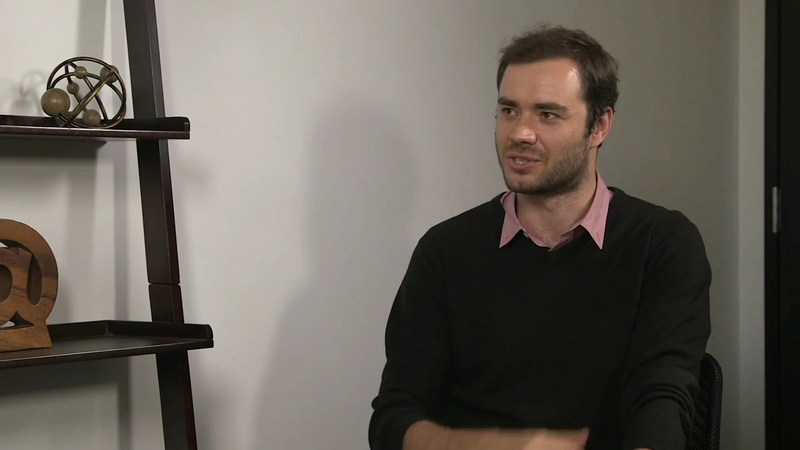
吴恩达：当DeepNet软件超越了你的表现时，你有没有很惊讶?
Andrej：绝对，是的，绝对的，我的意思是，有时一张图真的很难看出是什么，那图就是小块黑白色，还有一些黑点，到处都是，我没看出来是什么，我只能猜测这属于20个类别之间，但网络就直接懂了，我不明白是怎么一回事，所以这里有点点超人类的意思了，但还有，我想网络非常擅长识别这些，地砖图案和纹理的统计规律，我想在这方面，网络比人类表现优秀毫不奇怪，它可以从大量图像中提取精细的统计特征，而在许多情况下，我很惊讶，因为有些图像需要识字，图片有时就是一个瓶子，你看不出来是什么，但它上面有文本，告诉你它是什么，作为人类，我可以阅读文字，这没问题，但网络必须自己学习读取信息来识别物体，因为单看图像并不明显。
吴恩达：还有一件事让你声名远扬，深度学习社区一直很感激你的贡献，就是你教了CS231n课程，并把它放到网上，可以告诉我具体的经过吗?
Andrej：是的，当然了，所以我有个强烈的感觉，这种技术是革命性的，很多人都希望能用上，这几乎像一把锤子，我想做的是，我那时能够随意把这把锤子交给很多人，我觉得这种工作很有吸引力，从博士生的角度来看，不太建议做这种事，因为你会把你的研究搁置一边，我的意思是说，这占用了我120%时间，我必须将所有研究放一边，我是说，这门课我带过两次，每次都要4个月时间，所以时间基本上是花在课上，所以从这个角度来看不太建议，但这基本上是我的博士阶段的亮点，这与研究甚至没有关系，我认为教一门课绝对是我博士生的亮点，只要看到学生，看到他们真的很兴奋，这门课和一般的不同，通常，课程里讲的内容是19世纪发现的，这些经典知识，但这样一门课，我可以介绍一周前刚发表的论文，甚至昨天刚发表的，这些都是前沿研究，想本科生，还有其他学生，真的很喜欢这门课贴近前沿的特点，他们发现他们是可以理解到前沿的，这不是核物理或火箭科学，你只需要会微积分，代数，你实际上就能理解所有背后的原理，我想这个事实如此强大，事实上这个领域日新月异，学生们就会觉得每天都处于时代浪潮的前端，我想这就是大家那么喜欢这门课的原因。
吴恩达：而且你真的帮助了很多人，送出去了很多锤子，是啊，作为一个研究深度学习，有些时日的研究员，这个领域还在迅速发展，我想知道，你自己的想法是怎样的，这么多年来你对深度学习的理解有何改变?
Andrej：是的，基本上当年我见到的是受限玻尔兹曼机处理这些手写数字数据，那时我还不知道这种技术会被大规模应用，不知道这个领域有多重要，还有，当我开始研究计算机视觉，卷积网络时，这些概念都已经存在，但它们并不像是计算机视觉界很快就会使用的东西，那时人们的看法是，这些处理小案例不错，但无法推广到更大的图像，这种认识错到极端了。[笑]所以基本上，我很惊讶现在这个技术到处都在用，结果非常好，我说这是最大的惊喜，而且还不仅如此，它在一个地方表现很好，比如ImageNet，但另一方面，没有人预计到它的趋势， 至少我自己没预计到，就是你可以把这些预先训练好的网络迁移到其他领域，你可以在任意其他任务中精细调校网络，因为现在你不只解决了ImageNet问题，而且你需要数百万个例子，网络变成了非常普适的特征提取器，而且这是我的第二个想法，我觉得更少人预计到了这个发展，还有这些论文，它们就在这里，人们在计算机视觉里的一切努力，场景分类，动作识别，对象识别，基本属性等等，人们只需要通过微调网络就把每个任务都解决了，所以对我来说是非常意外的。
吴恩达：是的，我想监督学习在媒体上很热门，但是，然而预先训练微调或迁移学习，其实都效果拔群，但这些领域媒体报道更少一些。
Andrej：对的，就是这样，是的，我觉得其中一个进展不大的方向是无监督学习，被寄予了太多希望，我认为这才是真正吸引，在2007年左右吸引很多研究人员进入了这个领域的概念，但我觉得那个梦想还没被实现，还有令我意外的一方面是，监督学习竟然效果这么好，而无监督学习，它还是处于很原始的状态，怎么利用它，或者怎么让它达到实用，还不太明显，即使很多人还是对它的未来深信不疑，我说在这个领域，可以用这个词。
吴恩达：所以我知道你是其中一个，一直在思考AI远期未来的研究员，你想分享你的想法吗?
Andrej：所以我最后花了差不多一年半，在OpenAI这里思考这些话题，在我看来，这个领域会分成两条轨迹，一边是应用AI 就是搭建这些神经网络，训练它们，主要用监督学习，有可能用无监督学习，然后慢慢提升性能，比如说提高图像识别率之类的；另一个方向是，更一般的人工智能方向，就是如何让神经网络变成一个完全动态的系统，可以思考，有语言能力，可以做人类能做的所有事情，并以这种方式获得智能，我认为一直到很有趣的地方是 例如在计算机视觉中，我们一开始研究的方向，我想是错误的，那时我们试图把它分解成不同的部分，我们就像是，人可以识别人，可以识别场景，人可以识别物体，所以我们就开始研究人类能做的各种事情，一旦做出来了，就分成各种不同的子领域了，一旦我们有了这些独立的系统，我们再开始把它们组装起来，我觉得这种做法是错误的，我们已经见到历史上这么做结果如何，我想这里还有其他类似的事情正在发展，很可能是更高水平的AI，所以人类会问问题，会做计划，会做实验来了解世界运作的规律，或者和其他人交谈，我们就发明了语言，人们试图通过功能来区分各种能力，然后复制每一种能力，把它们放到一起组成某种机械大脑，我觉得这个方法论是错的，我更感兴趣的领域，不是这种分解的，还原论的手段，而是希望构建一种全面动态的神经网络系统，这样你一直处理的是完整的代理人程序。
那么问题在于，你如何构思目标去优化权重，优化构成大脑的各种权重，才能得到真正的智能行为?所以这是OpenAI里我一直在想的很多东西，我认为有很多不同的方式，人们在这个问题上也有很多思考，，例如，在监督学习方向，我在网上发了这篇文章，这不是一篇文章，而是我写的一个小故事，这个小故事尝试构想出一个虚拟的世界，如果我们只通过扩大监督学习规模来逼近这个AGI，我们知道这是可行的，然后得到像这样的东西，比如亚马逊土耳其机器人，人们可以接触不同机器人，让它们完成各种任务，然后我们在这个基础上训练，把它看成是模仿人类的监督学习数据集，这样的东西会具体是什么样的，所以这里还有其他方向，比如基于算法信息理论的无监督学习，如AIXI，或者构成人工生命，看起来更像人工进化的东西，所以这就是我花时间思考很多的事情，我已经得到正确答案了，但我不愿意在这里说。
吴恩达：至少我们可以通过阅读你的博文来了解更多信息。
Andrej：是的，当然了。
吴恩达：你今天已经提出了很多建议，还有很多人想进入AI和深度学习领域，对于这些人来说，你有什么建议呢?
Andrej：是的，当然了，我想人们在讨论CS231n的时候，为什么他们认为这是一个非常有用的课程，我听到最多的是，人们很喜欢我会一直讲到最底层的技术细节，他们要调用的不是一个库，而是可以看到底层代码，看到一切是怎么实现的，然后，他们自己去实现各大部分，所以你必须接触到最底层，知道一切程序背后的原理，不要随便抽象化，你必须充分了解全栈，了解整个流程，当我学习这些内容时，我发现这样学，学到的东西最多，就是你自己从零开始去实现，这是很重要的，就是这部分学习性价比最高，从理解领域知识方面来看，所以我自己写库，这个库叫ConvNetJS，它是用Javascript写的，可以实现卷积神经网络，那是我学习后向传播的方法，我一直建议别人不要一开始就用TensorFlow之类的东西，一旦你自己写出了最底层的代码之后，你可以用，因为你知道所有背后的原理，这样你就很放心，现在就可以使用这样的框架，可以帮你省去一点细节功夫，，但你自己必须知道背后的所有原理，所以这是帮助我最多的东西，这是人们在上CS231n课程时最感兴趣的东西，所以我建议很多人这么做。
吴恩达：不是直接跑神经网络，让一切自然发生。
Andrej：是的，在某些层的序列中，我知道当我加入一些dropout层，可以让它表现更好，但这不是你想要的在这种情况下， 你会无法有效调试，你不能有效地改进模型。
吴恩达：是的， 这个答案让我想起我们的deeplearning.ai课程，一开始先用几周介绍Python编程，然后再..。
Andrej：是的 这样很好。
吴恩达：非常感谢你来到这里分享你的见解和建议，在深度学习世界中，你已经是很多人的偶像了，我真的很高兴，非常感谢你今天可以接受采访。
Andrej：是的 谢谢你邀请我。